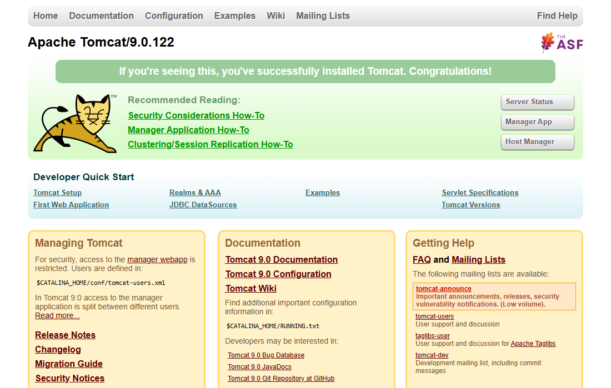
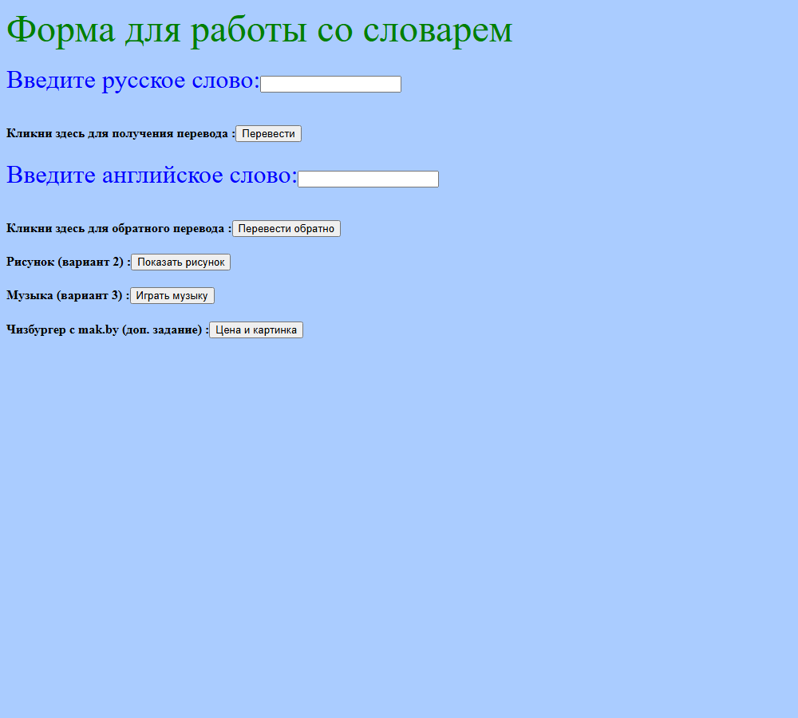
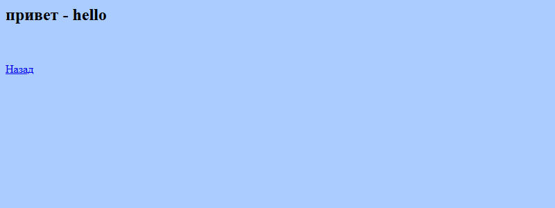
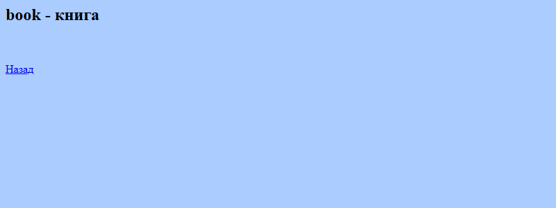
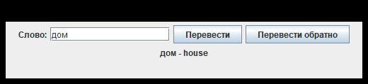
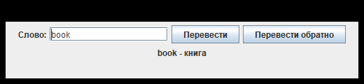
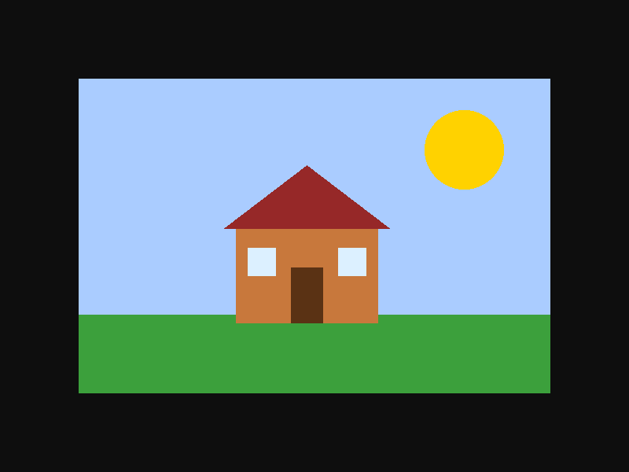
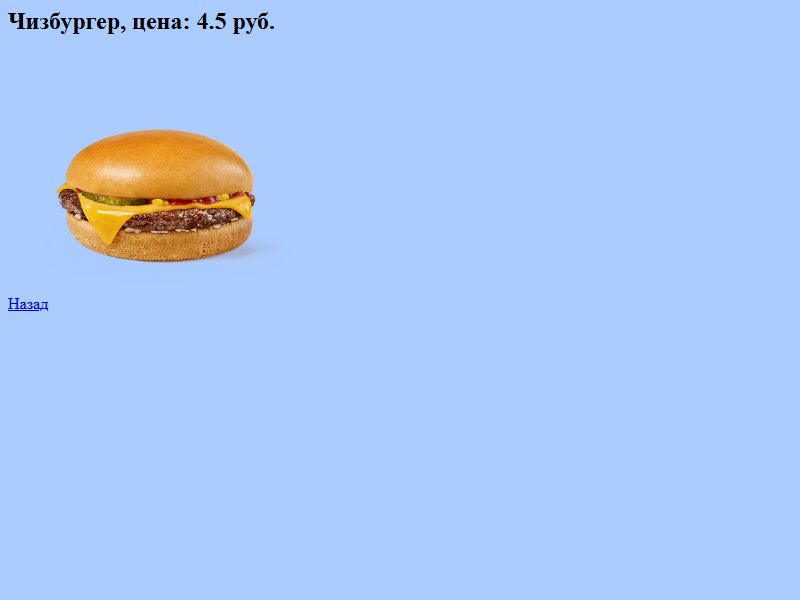

<title>ЛР3 Сервлеты</title>
<meta name="claude:viewport-fit-sides" content="cover">
<link rel="preconnect" href="https://fonts.googleapis.com">
<link rel="stylesheet" href="https://fonts.googleapis.com/css2?family=IBM+Plex+Sans:wght@400;500;600&family=IBM+Plex+Sans+Condensed:wght@500;600&family=IBM+Plex+Mono:wght@400;500&display=swap">
<style>
:root{
  /* layout: one reading column with a sticky section bar; code left, explanation right in tables */
  --bg:#f6f7f9; --surface:#ffffff; --fg:#1b2430; --muted:#5b6678; --line:#d9dee6;
  --accent:#1d4e89; --accent-ink:#ffffff; --accent-soft:#e3edf8;
  --warm:#b4501a; --warm-soft:#fbeadf;
  --code-bg:#eef1f5; --code-fg:#1b2430;
  --font-body:"IBM Plex Sans",system-ui,-apple-system,"Segoe UI",Roboto,sans-serif;
  --font-head:"IBM Plex Sans Condensed","IBM Plex Sans",system-ui,sans-serif;
  --font-mono:"IBM Plex Mono",ui-monospace,Consolas,"Courier New",monospace;
}
@media (prefers-color-scheme: dark){
  :root:not([data-theme="light"]){
    --bg:#10151c; --surface:#171e28; --fg:#e3e8ef; --muted:#9aa6b8; --line:#2a3443;
    --accent:#7db3ee; --accent-ink:#0d1520; --accent-soft:#1c2b3f;
    --warm:#f0a57a; --warm-soft:#33241b;
    --code-bg:#0e131a; --code-fg:#dbe3ee; color-scheme:dark;
  }
}
:root[data-theme="dark"]{
  --bg:#10151c; --surface:#171e28; --fg:#e3e8ef; --muted:#9aa6b8; --line:#2a3443;
  --accent:#7db3ee; --accent-ink:#0d1520; --accent-soft:#1c2b3f;
  --warm:#f0a57a; --warm-soft:#33241b;
  --code-bg:#0e131a; --code-fg:#dbe3ee; color-scheme:dark;
}
*{box-sizing:border-box}
html{scroll-behavior:smooth;scroll-padding-top:64px}
body{background:var(--bg);color:var(--fg);font:16px/1.65 var(--font-body);margin:0}
.wrap{max-width:1040px;margin:0 auto;padding-left:max(16px,env(safe-area-inset-left,0px));padding-right:max(16px,env(safe-area-inset-right,0px))}
.hero{background:var(--accent);color:var(--accent-ink);padding-block:44px 36px}
.hero .kicker{margin:0 0 8px;font-size:13px;letter-spacing:.08em;text-transform:uppercase;opacity:.85}
.hero h1{font:600 clamp(32px,6vw,52px)/1.08 var(--font-head);margin:0 0 14px;text-wrap:balance}
.hero .lead{max-width:62ch;margin:0 0 22px;font-size:18px;opacity:.95}
.facts{list-style:none;padding:0;margin:0;display:grid;grid-template-columns:repeat(auto-fit,minmax(190px,1fr));gap:10px}
.facts li{background:rgba(255,255,255,.14);border-radius:6px;padding:10px 14px;font-size:15px}
.facts b{display:block;font-size:12px;letter-spacing:.07em;text-transform:uppercase;opacity:.8;font-weight:500}
.toc{position:sticky;top:env(safe-area-inset-top,0px);z-index:20;background:var(--surface);border-bottom:1px solid var(--line)}
.toc-row{display:flex;gap:4px;overflow-x:auto;padding-block:8px;scrollbar-width:thin}
.toc a{white-space:nowrap;padding:6px 12px;border-radius:6px;color:var(--fg);text-decoration:none;font-size:14px}
.toc a:hover{background:var(--accent-soft);color:var(--accent)}
main{padding-block:12px 40px}
section{padding-top:28px}
h2{font:600 clamp(26px,4vw,34px)/1.15 var(--font-head);margin:8px 0 14px;text-wrap:balance}
h3{font:600 22px/1.25 var(--font-head);margin:34px 0 10px;text-wrap:balance}
h4{font:600 17px/1.3 var(--font-head);margin:24px 0 8px;color:var(--muted);text-transform:uppercase;letter-spacing:.05em}
p,li{max-width:78ch}
a{color:var(--accent)}
code{font:0.9em var(--font-mono);background:var(--code-bg);padding:.1em .35em;border-radius:4px;overflow-wrap:anywhere}
pre.code{background:var(--code-bg);color:var(--code-fg);border:1px solid var(--line);border-radius:6px;padding:14px 16px;margin:12px 0;overflow-x:auto;font:13.5px/1.55 var(--font-mono);tab-size:4}
pre.code code{background:none;padding:0;font:inherit;overflow-wrap:normal}
pre.mini{margin:0;padding:10px 12px;font-size:12.5px;border:0;background:var(--code-bg)}
pre.tree{font-size:13px}
.note{background:var(--warm-soft);border-left:4px solid var(--warm);padding:10px 14px;border-radius:0 6px 6px 0;max-width:78ch}
.scroll{overflow-x:auto;margin:12px 0}
table{border-collapse:collapse;width:100%;background:var(--surface);border:1px solid var(--line);font-size:15px}
th,td{border:1px solid var(--line);padding:9px 12px;text-align:left;vertical-align:top}
th{background:var(--accent-soft);color:var(--fg);font-weight:600;font-size:13px;letter-spacing:.04em;text-transform:uppercase}
table.walk{table-layout:fixed;min-width:760px}
table.walk td:first-child,table.walk th:first-child{width:38%;padding:0}
table.walk th:first-child{padding:9px 12px}
table.walk td:first-child pre{min-height:100%}
.steps{counter-reset:s;list-style:none;padding:0;margin:12px 0;display:grid;gap:10px}
.steps li{counter-increment:s;background:var(--surface);border:1px solid var(--line);border-radius:6px;padding:12px 14px 12px 56px;position:relative;max-width:none}
.steps li::before{content:counter(s);position:absolute;left:14px;top:11px;width:28px;height:28px;border-radius:50%;background:var(--accent);color:var(--accent-ink);display:grid;place-items:center;font:600 14px var(--font-mono)}
.checks{list-style:none;padding:0;display:grid;gap:8px}
.checks li{padding-left:30px;position:relative}
.checks li::before{content:"";position:absolute;left:4px;top:.45em;width:12px;height:12px;border:2px solid var(--accent);border-radius:3px}
.gallery{display:grid;grid-template-columns:repeat(auto-fit,minmax(min(100%,420px),1fr));gap:18px;margin-top:14px}
figure{margin:0;background:var(--surface);border:1px solid var(--line);border-radius:6px;overflow:hidden}
figure img{display:block;width:100%;height:auto;max-width:100%;background:#fff}
figcaption{padding:10px 14px;font-size:14px;color:var(--muted)}
details.qa{background:var(--surface);border:1px solid var(--line);border-radius:6px;margin:10px 0}
details.qa summary{cursor:pointer;padding:12px 16px;font-weight:600;list-style-position:inside}
details.qa summary:focus-visible,.toc a:focus-visible{outline:2px solid var(--accent);outline-offset:2px}
details.qa[open] summary{border-bottom:1px solid var(--line)}
.ans{padding:6px 16px 14px}
pre.mermaid{background:var(--surface);border:1px solid var(--line);border-radius:6px;padding:14px;margin:12px 0;overflow-x:auto;text-align:center}
.foot{border-top:1px solid var(--line);padding-block:20px;color:var(--muted);font-size:14px}
@media (max-width:640px){
  body{font-size:15.5px}
  table.walk{min-width:680px}
  .hero{padding-block:30px 26px}
}
@media (prefers-reduced-motion:reduce){html{scroll-behavior:auto}}
</style>

<header class="hero">
  <div class="wrap">
    <p class="kicker">АиПРП · лабораторная работа 3 · серверные классы</p>
    <h1>ЛР3: сервлеты и словарь</h1>
    <p class="lead">Как устроена лаба, как её запустить, что показывать на защите и что отвечать. Код разобран блоками и по элементам, теория собрана из методички и чата группы.</p>
    <ul class="facts">
      <li><b>Сервер</b>Tomcat 9, порт 8080</li>
      <li><b>Приложение</b>lab_servlet.war</li>
      <li><b>Клиент</b>ApacheClient (отдельный проект)</li>
      <li><b>Доп. задание</b>чизбургер с mak.by</li>
    </ul>
  </div>
</header>
<nav class="toc" aria-label="Разделы"><div class="wrap"><div class="toc-row">
  <a href="#scheme">Схема</a><a href="#run">Запуск</a><a href="#defense">Защита</a><a href="#screens">Скриншоты</a>
  <a href="#code">Разбор кода</a><a href="#qa">Вопросы по лабе</a><a href="#theory">Общая теория</a><a href="#traps">Ловушки</a>
</div></div></nav>
<main class="wrap">

<section id="scheme">
<h2>1. Что происходит в лабе целиком</h2>
<p>Есть <b>два проекта</b>. Первый, <code>lab_servlet</code>, это веб-приложение. Его упаковывают в WAR и кладут в Tomcat. Второй, <code>apacheclient</code>, это обычная Java-программа с окном. Она обращается к сервлету по URL, как это делает браузер.</p>

<h3>Кто с кем разговаривает</h3>
<pre class="mermaid">flowchart LR
  B["Браузер<br/>(dictionary.html)"] -- "HTTP GET /lab_servlet/MyServlet?txt=дом" --> T
  C["ApacheClient<br/>(Java + Swing)"] -- "HTTP GET, тот же URL" --> T
  subgraph T["Tomcat 9 · порт 8080 · контекст /lab_servlet"]
    direction TB
    M["MyServlet<br/>словарь"] --> DB[("H2 в памяти<br/>words(rus, eng)")]
    I["ImageServlet<br/>рисунок"]
    Mu["MusicServlet<br/>музыка"]
    K["MakServlet<br/>чизбургер"]
  end
  K -- "HttpURLConnection GET" --> S["mak.by/catalog/burgery/"]</pre><p class="note">Сервлет не знает, кто его вызвал: браузер или программа. Ему приходит <code>HttpServletRequest</code>, он пишет ответ в <code>HttpServletResponse</code>. Поэтому клиент и сервер можно держать в разных проектах.</p>

<h3>Путь одного запроса «перевести слово дом»</h3>
<pre class="mermaid">sequenceDiagram
  autonumber
  participant U as Пользователь
  participant B as Браузер
  participant T as Tomcat
  participant S as MyServlet
  participant D as H2 (таблица words)
  U->>B: вводит «дом», жмёт «Перевести»
  B->>T: GET /lab_servlet/MyServlet?txt=%D0%B4%D0%BE%D0%BC
  T->>T: по web.xml находит класс MyServlet
  Note over T,S: при первом запросе Tomcat вызывает init(): создаётся база и таблица
  T->>S: doGet(request, response)
  S->>S: processRequest(): getParameter("txt") = "дом"
  S->>D: SELECT eng FROM words WHERE rus = ?  (? = "дом")
  D-->>S: ResultSet, курсор на строке «house»
  S-->>T: out.println("<h2>дом - house</h2>")
  T-->>B: HTTP 200, text/html; charset=UTF-8
  B-->>U: страница «дом - house»</pre>
<h3>Структура проекта</h3>
<pre class="code tree"><code>lab3/
├─ lab_servlet/                    ← проект-сервер (Maven, упаковка war)
│  ├─ pom.xml                      зависимости: servlet-api (provided), h2
│  └─ src/main/
│     ├─ java/                     ← «Пакеты исходных файлов» в NetBeans
│     │   ├─ MyServlet.java        словарь + БД + обратный перевод
│     │   ├─ ImageServlet.java     вариант 2: рисунок
│     │   ├─ MusicServlet.java     вариант 3: музыка
│     │   └─ MakServlet.java       доп. задание: чизбургер mak.by
│     └─ webapp/
│         ├─ dictionary.html       клиентский сайт (стартовая страница)
│         ├─ images/picture.png
│         ├─ music/music.wav
│         └─ WEB-INF/web.xml       конфигурация сервлетов
├─ apacheclient/                   ← проект-клиент (Maven, jar с зависимостями)
│  ├─ pom.xml                      httpclient 4.5.14 + shade-plugin
│  └─ src/main/java/apacheclient/ApacheClient.java
├─ 1-build-and-start-tomcat.bat    сборка WAR и запуск Tomcat
├─ 2-run-client.bat                запуск клиента
├─ 3-stop-tomcat.bat               остановка Tomcat
├─ 4-open-netbeans.bat             открыть оба проекта в NetBeans (JDK 17)
└─ 5-open-vscode.bat               открыть папку в VS Code (задачи в .vscode)</code></pre>

<h3>Как это связано с методичкой</h3>
<div class="scroll"><table>
<thead><tr><th>Что требует методичка</th><th>Где в лабе</th></tr></thead><tbody>
<tr><td>Сайт <code>dictionary.html</code> с формой, <code>action="MyServlet"</code></td><td><code>webapp/dictionary.html</code>, форма <code>frm</code></td></tr>
<tr><td>Сервлет с <code>doGet</code>/<code>doPost</code>, оба ведут в <code>processRequest</code></td><td>все четыре сервлета</td></tr>
<tr><td><code>request.getParameter("txt")</code>, ответ через <code>PrintWriter out</code></td><td><code>MyServlet.processRequest</code></td></tr>
<tr><td>Корректировка <code>web.xml</code>: servlet, servlet-mapping, welcome-file-list, session-timeout</td><td><code>WEB-INF/web.xml</code></td></tr>
<tr><td>Общее задание: база с переводами</td><td>H2, таблица <code>words</code>, создаётся в <code>init()</code></td></tr>
<tr><td>Общее задание: обратный перевод</td><td>параметр <code>eng</code>, форма <code>frm2</code>, метод <code>translate("eng","rus",…)</code></td></tr>
<tr><td>Общее задание: клиент и сервер в двух проектах, вызов по URL</td><td><code>apacheclient</code> (Apache HttpClient, <code>HttpGet</code>)</td></tr>
<tr><td>Индивидуальное задание, вариант 2 (рисунок)</td><td><code>ImageServlet</code>, <code>image/png</code></td></tr>
<tr><td>Индивидуальное задание, вариант 3 (музыка)</td><td><code>MusicServlet</code>, <code>audio/wav</code></td></tr>
<tr><td>Дополнительное задание от преподавателя: цена и картинка чизбургера по URL mak.by</td><td><code>MakServlet</code></td></tr>
</tbody></table></div>
<p class="note">Какой у тебя вариант (1–5) в методичке, я не знаю. Сделаны варианты 2 и 3. Назови преподавателю свой, а второй покажи как запасной. Варианты 1, 4 и 5 (PowerPoint, Word, Excel) делаются так же, меняется только тип содержимого, см. раздел «Вопросы по лабе».</p>
</section>

<section id="run">
<h2>2. Как запустить</h2>

<h3>Окружение (уже установлено на этом компьютере)</h3>
<div class="scroll"><table>
<thead><tr><th>Что</th><th>Где лежит</th><th>Зачем</th></tr></thead><tbody>
<tr><td>JDK 17</td><td><code>E:\tools\jdk17</code></td><td>компиляция и запуск Java</td></tr>
<tr><td>Maven 3.10.0</td><td><code>E:\tools\apache-maven-3.10.0</code></td><td>сборка WAR и jar, скачивание библиотек</td></tr>
<tr><td>Tomcat 9.0.122</td><td><code>E:\tools\apache-tomcat-9.0.122</code></td><td>сервлет-контейнер и веб-сервер</td></tr>
<tr><td>Edge / любой браузер</td><td>системный</td><td>клиент-сайт</td></tr>
</tbody></table></div>
<p>NetBeans в методичке нужен только как среда. Мы собираем проект Maven'ом, это то же самое («Очистить и Построить» = <code>mvn package</code>, «Развернуть» = копирование WAR в <code>webapps</code>). Нужен Tomcat именно <b>9</b>: в нём пакеты <code>javax.servlet</code>, как в коде. В Tomcat 10 и выше они переименованы в <code>jakarta.servlet</code>, и этот код там не заработает.</p>

<h3>Три шага</h3>
<ol class="steps">
  <li><b>Собрать и запустить сервер.</b> Двойной щелчок по <code>1-build-and-start-tomcat.bat</code>. Он собирает <code>lab_servlet.war</code>, копирует его в <code>webapps</code> и запускает Tomcat в отдельном окне. Через 5–10 секунд открой <code>http://localhost:8080/lab_servlet/</code>.</li>
  <li><b>Запустить клиента.</b> Двойной щелчок по <code>2-run-client.bat</code>. Откроется окно «Словарь (клиент)». Tomcat должен уже работать.</li>
  <li><b>Остановить сервер.</b> <code>3-stop-tomcat.bat</code> после защиты.</li>
  <li><b>По желанию: IDE.</b> <code>4-open-netbeans.bat</code> открывает оба проекта в NetBeans, как в методичке. Подробности ниже.</li>
</ol>

<h3>Если запускать руками в терминале</h3>
<pre class="code"><code>cd E:\beam-java\airp\lab3\lab_servlet
E:\tools\apache-maven-3.10.0\bin\mvn.cmd package          # получится target\lab_servlet.war
copy target\lab_servlet.war E:\tools\apache-tomcat-9.0.122\webapps\
E:\tools\apache-tomcat-9.0.122\bin\startup.bat

cd ..\apacheclient
E:\tools\apache-maven-3.10.0\bin\mvn.cmd package
E:\tools\jdk17\bin\java.exe -Dfile.encoding=UTF-8 -jar target\apacheclient-1.0.jar</code></pre>
<p>Перед запуском должна быть переменная <code>JAVA_HOME=E:\tools\jdk17</code> и <code>CATALINA_HOME=E:\tools\apache-tomcat-9.0.122</code>. В <code>.bat</code> файлах они уже заданы. На другом компьютере поменяй три строки <code>set</code> в начале файлов.</p>

<h3>Работа через NetBeans (окружение на диске E)</h3>
<p>Всё окружение лежит на диске E и не требует установки: JDK, Maven и Tomcat в <code>E:\tools</code>, NetBeans в <code>E:\beam-java\Apache NetBeans</code> (портативная копия, установщик <code>Apache-NetBeans-27.exe</code> лежит в папке «АиПРП Установщики»). Файл <code>4-open-netbeans.bat</code> запускает NetBeans на JDK 17 и сразу открывает оба проекта.</p>
<ol class="steps">
 <li><b>Открыть проекты.</b> Двойной щелчок по <code>4-open-netbeans.bat</code>. Первый запуск долгий (1–2 минуты, индексация). В окне «Проекты» появятся <code>lab_servlet</code> (веб-приложение) и <code>apacheclient</code> (клиент). Если не появились: Файл → Открыть проект → выбрать папки из <code>lab3</code>.</li>
 <li><b>Подключить Tomcat (один раз).</b> Окно «Службы» → «Серверы» → правый щелчок → «Добавить сервер» → Apache Tomcat or TomEE → папка <code>E:\tools\apache-tomcat-9.0.122</code>. Логин и пароль задай любые (нужны для менеджера, для лабы не важны). Это то же самое, что в методичке делают для GlassFish.</li>
 <li><b>Собрать.</b> Правый щелчок по <code>lab_servlet</code> → «Очистить и построить» (это <code>mvn clean package</code>, получится WAR).</li>
 <li><b>Развернуть.</b> Правый щелчок по <code>lab_servlet</code> → «Выполнить» → выбрать Tomcat. NetBeans разворачивает WAR и откроет браузер на <code>http://localhost:8080/lab_servlet/</code>.</li>
 <li><b>Клиент.</b> Правый щелчок по <code>apacheclient</code> → «Очистить и построить», затем правый щелчок по файлу <code>ApacheClient.java</code> → «Выполнить файл» (или Shift+F6). Откроется окно клиента.</li>
 <li><b>Править код.</b> Изменил <code>MyServlet.java</code>, нажал F11 (построить) и «Выполнить» ещё раз, и NetBeans заменит приложение в Tomcat.</li>
</ol>
<p class="note">Что проверено мной на этом компьютере: JDK, Maven и Tomcat собирают и запускают лабу (все адреса ответили), NetBeans запускается на JDK 17 командой из <code>4-open-netbeans.bat</code> (первый старт долгий; что проекты отобразились в окне IDE, я не видел). Подключение Tomcat внутри NetBeans (шаг 2) делается мышью в окне IDE, я его не кликал за тебя. Если NetBeans будет капризничать, лаба целиком запускается тремя <code>.bat</code> без IDE.</p>

<h3>Работа через VS Code</h3>
<p>VS Code стоит на диске E (<code>E:\VisualDSL_Tools\VSCode</code>), пакет расширений Java (<code>vscjava.vscode-java-pack</code>) в нём уже установлен. В папке <code>lab3\.vscode</code> лежат готовые задачи, настройки JDK 17 и рекомендации расширений.</p>
<ol class="steps">
 <li><b>Открыть.</b> Двойной щелчок по <code>5-open-vscode.bat</code> (откроется папка <code>lab3</code>). Согласись доверять папке. Расширение Java само подхватит оба Maven-проекта и JDK 17 из <code>settings.json</code>.</li>
 <li><b>Собрать сервер.</b> Ctrl+Shift+P → «Tasks: Run Task» → <b>1. Собрать WAR и скопировать в Tomcat</b>.</li>
 <li><b>Запустить Tomcat.</b> Run Task → <b>2. Запустить Tomcat</b>. Он работает в терминале VS Code, логи видны там же. Открой <code>http://localhost:8080/lab_servlet/</code>.</li>
 <li><b>Клиент.</b> Run Task → <b>3. Собрать и запустить клиента</b>. Откроется окно «Словарь (клиент)».</li>
 <li><b>После правки кода.</b> Снова задача 1, Tomcat подхватит новый WAR сам (перезапускать не нужно). Если нет, останови задачей 4 и запусти задачу 2.</li>
 <li><b>Остановить.</b> Run Task → <b>4. Остановить Tomcat</b>.</li>
</ol>
<p class="note">Проверено кликами в VS Code (веб-версия того же VS Code с диска E): задача 1 собрала WAR, задача 2 запустила Tomcat (<code>Server startup</code> в терминале), форма в браузере перевела «студент» и «computer», кнопка чизбургера показала 4.5 руб. и картинку, задача 3 запустила окно клиента. Пути в <code>tasks.json</code> записаны с прямыми слэшами (<code>E:/tools/…</code>): с обратными терминал VS Code превращал <code>	</code> в табуляцию и команда ломалась. Если палитра не открывается по Ctrl+Shift+P, нажми F1.</p>

<h3>Адреса для проверки</h3>
<div class="scroll"><table>
<thead><tr><th>Адрес</th><th>Что должно быть</th></tr></thead><tbody>
<tr><td><code>http://localhost:8080/lab_servlet/</code></td><td>форма словаря (стартовая страница из <code>welcome-file</code>)</td></tr>
<tr><td><code>…/MyServlet?txt=дом</code></td><td><code>дом - house</code></td></tr>
<tr><td><code>…/MyServlet?eng=book</code></td><td><code>book - книга</code></td></tr>
<tr><td><code>…/ImageServlet</code></td><td>рисунок в браузере</td></tr>
<tr><td><code>…/MusicServlet</code></td><td>проигрыватель с музыкой</td></tr>
<tr><td><code>…/MakServlet</code></td><td>цена и картинка чизбургера</td></tr>
<tr><td><code>…/McDonaldsServlet</code></td><td>вариант чизбургера из ветки origin/main (слит с локальной веткой, оба сервлета есть в web.xml)</td></tr>
</tbody></table></div>
<p class="note"><b>Запуск из VS Code (Run).</b> В <code>.vscode/launch.json</code> есть конфигурация «Клиент (ApacheClient)»: выбери её на вкладке Run and Debug и нажми зелёный треугольник. Tomcat запускается задачей «2. Запустить Tomcat» (Terminal → Run Task), WAR собирает задача 1. Расширения: Java Pack и Tomcat for Java (<code>adashen.vscode-tomcat</code>). В <code>settings.json</code> пути к JDK теперь с прямыми слэшами.</p>
<p>Слова в базе: привет, дом, книга, студент, компьютер. Любое другое даст «не найдено».</p>
<p class="note">Проверено: WAR собирается, Tomcat 9.0.122 его разворачивает, все шесть адресов отвечают кодом 200. Чизбургер вернул <code>4.5 руб.</code>, окно клиента показало <code>дом - house</code> и <code>book - книга</code>.</p>
</section>

<section id="defense">
<h2>3. Что делать и говорить на защите</h2>
<p>Порядок из чата: сначала общее задание, потом индивидуальное. Принеси печатный отчёт и конспект. Если препод попросит показать, что клиент и сервер разные, запускай их по отдельности, как ниже.</p>

<h3>Сценарий показа (5–7 минут)</h3>
<ol class="steps">
 <li><b>Запусти сервер.</b> <code>1-build-and-start-tomcat.bat</code>. Скажи: «Tomcat это сервлет-контейнер, он слушает порт 8080 и держит мои сервлеты. Приложение упаковано в WAR».</li>
 <li><b>Открой форму</b> <code>http://localhost:8080/lab_servlet/</code>. Скажи: «Эту страницу Tomcat отдал по <code>welcome-file</code> из web.xml».</li>
 <li><b>Перевод.</b> Введи «дом», жми «Перевести». Покажи в адресной строке <code>MyServlet?txt=…</code>. Скажи: «Метод GET, параметры в URL. Имя <code>txt</code> совпадает с <code>name="txt"</code> в форме и с <code>getParameter("txt")</code> в сервлете».</li>
 <li><b>Обратный перевод.</b> Введи <code>book</code> в нижнюю форму. Скажи: «Тот же сервлет, другой параметр <code>eng</code>. Ищем по другому столбцу таблицы».</li>
 <li><b>Слово, которого нет.</b> «кот» даст «не найдено». Скажи: «Если <code>rs.next()</code> вернул false, строки нет».</li>
 <li><b>Клиент.</b> Запусти <code>2-run-client.bat</code>, введи «дом», жми обе кнопки. Скажи: «Это другой проект, обычное Java-приложение. Оно шлёт HTTP GET на тот же URL и разбирает ответ».</li>
 <li><b>Индивидуальное задание.</b> Кнопка «Показать рисунок» (вариант 2) и «Играть музыку» (вариант 3). Скажи: «Тип содержимого в заголовке <code>Content-Type</code> говорит браузеру, что делать с байтами».</li>
 <li><b>Дополнительное: чизбургер.</b> Кнопка «Цена и картинка». Скажи: «Сервлет сам стал клиентом: скачал страницу mak.by по URL, нашёл теги чизбургера, взял цену и картинку и собрал свой html».</li>
 <li><b>Покажи код.</b> Открой <code>MyServlet.java</code> и по очереди: <code>init</code> (база), <code>translate</code> (запрос), <code>processRequest</code> (чтение параметра и вывод). Затем <code>web.xml</code>.</li>
</ol>

<h3>Что обязательно нужно уметь объяснить</h3>
<ul class="checks">
 <li>Что такое сервлет и контейнер, жизненный цикл <code>init → service(doGet/doPost) → destroy</code>.</li>
 <li>Как форма вызывает сервлет (<code>action</code>, <code>method</code>, <code>name</code>) и как сервлет читает параметр.</li>
 <li>Что в <code>web.xml</code> и зачем каждый тег.</li>
 <li>Что такое JDBC, драйвер, <code>PreparedStatement</code>, <code>ResultSet</code> и курсор.</li>
 <li>Чем GET отличается от POST.</li>
 <li>Как клиент вызывает сервлет по URL (<code>HttpGet</code>, <code>HttpURLConnection</code>).</li>
 <li>Тема из чата: процесс и поток, GC и финализатор, стек и куча, три назначения буфера, польская запись, драйверы. Ответы в разделе «Общая теория».</li>
</ul>

<h3>Если препод просит что-то поменять</h3>
<div class="scroll"><table>
<thead><tr><th>Просьба</th><th>Что править</th></tr></thead><tbody>
<tr><td>Добавить слово в словарь</td><td>в <code>MyServlet.init()</code> в строку <code>INSERT INTO words VALUES (...)</code> добавить пару <code>('кот', 'cat')</code></td></tr>
<tr><td>Другая цена или другой бургер с mak.by</td><td>в <code>MakServlet</code> заменить название в строке <code>category__label">Чизбургер</code>, например на «Биг Бургер»</td></tr>
<tr><td>Другая картинка</td><td>заменить <code>webapp/images/picture.png</code> и собрать заново</td></tr>
<tr><td>Другая музыка</td><td>заменить <code>webapp/music/music.wav</code></td></tr>
<tr><td>Вызвать сервлет через POST</td><td>в <code>dictionary.html</code> поменять <code>method="Get"</code> на <code>method="Post"</code>: сработает <code>doPost</code>, который тоже ведёт в <code>processRequest</code></td></tr>
<tr><td>После правки кода</td><td>снова запустить <code>1-build-and-start-tomcat.bat</code> (он пересобирает WAR)</td></tr>
</tbody></table></div>
</section>

<section id="screens">
<h2>4. Скриншоты: как должно выглядеть</h2>
<p>Снимки сделаны с запущенного приложения. Окно клиента отрисовано реальным классом <code>ApacheClient</code>.</p>
<div class="gallery">
<figure><figcaption>Tomcat 9 запущен и отвечает на порту 8080</figcaption></figure><figure><figcaption>Стартовая страница dictionary.html (форма словаря и кнопки заданий)</figcaption></figure><figure><figcaption>Перевод: привет → hello (MyServlet?txt=привет)</figcaption></figure><figure><figcaption>Обратный перевод: book → книга (MyServlet?eng=book)</figcaption></figure><figure><figcaption>Слова нет в базе: кот → не найдено</figcaption></figure><figure><figcaption>Клиент ApacheClient: кнопка «Перевести» (дом → house)</figcaption></figure><figure><figcaption>Клиент ApacheClient: кнопка «Перевести обратно» (book → книга)</figcaption></figure><figure><figcaption>Вариант 2: ImageServlet возвращает рисунок</figcaption></figure><figure><figcaption>Доп. задание: цена и картинка чизбургера с mak.by (4.5 руб.)</figcaption></figure></div></section><section id="code"><h2>5. Разбор кода</h2><p>Читай в таком порядке: сайт, <code>web.xml</code>, <code>MyServlet</code>, три остальных сервлета, клиент. Слева код, справа разбор. Где в строке важен каждый элемент, он разобран отдельно.</p><h3 id="c-html">5.1 dictionary.html: клиентский сайт</h3><p>Страница сайта, с которой всё начинается. Браузер получает её как обычный текст и рисует. Она ничего не считает: только собирает ввод и отправляет запрос.</p><div class="scroll"><table class="walk"><thead><tr><th>Код</th><th>Что это и зачем</th></tr></thead><tbody><tr><td><pre class="code mini"><code>&lt;!DOCTYPE html&gt;
&lt;html&gt;
  &lt;head&gt;</code></pre></td><td>Объявление типа документа (HTML5) и начало страницы. <code>head</code> содержит служебные данные: заголовок, кодировку.</td></tr><tr><td><pre class="code mini"><code>&lt;meta http-equiv="Content-Type"
      content="text/html; charset=UTF-8"&gt;</code></pre></td><td>Задаёт кодировку страницы. <b>Без неё русские буквы превратятся в «кракозябры».</b> <code>http-equiv</code> имитирует HTTP-заголовок, <code>charset=UTF-8</code> кодировка символов. Так сказано и в методичке.</td></tr><tr><td><pre class="code mini"><code>&lt;body bgcolor="#aaccff"&gt;</code></pre></td><td>Тело страницы. <code>bgcolor</code> задаёт голубой цвет фона: <code>#aaccff</code> это красный <code>aa</code>, зелёный <code>cc</code>, синий <code>ff</code> (16-ричные числа).</td></tr><tr><td><pre class="code mini"><code>&lt;form name="frm" method="Get"
      action="MyServlet"&gt;</code></pre></td><td><b>Главная строка лабы.</b> <code>form</code> группирует поля и кнопку. <code>name</code> просто имя формы. <code>method="Get"</code> означает: при отправке вызовется <code>doGet</code>, данные уйдут в адресной строке. <code>action="MyServlet"</code> это адрес сервлета. Он <b>относительный</b>: браузер достроит его до <code>http://localhost:8080/lab_servlet/MyServlet</code>, потому что страница лежит в приложении <code>lab_servlet</code>.</td></tr><tr><td><pre class="code mini"><code>&lt;Input type="Text" name="txt" value=""/&gt;</code></pre></td><td>Текстовое поле. <code>type="Text"</code> однострочное поле ввода. <code>name="txt"</code> <b>имя параметра</b>: именно под ним значение уйдёт на сервер и именно его читает <code>request.getParameter("txt")</code>. <code>value=""</code> начальное значение (пусто). Теги HTML не различают регистр, поэтому <code>Input</code> и <code>input</code> одно и то же.</td></tr><tr><td><pre class="code mini"><code>&lt;Input type="submit"
       value="Перевести"/&gt;</code></pre></td><td>Кнопка отправки. По клику браузер собирает все поля формы, делает строку <code>txt=дом</code>, добавляет к адресу после <code>?</code> и отправляет GET. <code>value</code> надпись на кнопке.</td></tr><tr><td><pre class="code mini"><code>&lt;form name="frm2" method="Get"
      action="MyServlet"&gt;  … name="eng" …</code></pre></td><td>Вторая форма для <b>обратного перевода</b>. Сервлет тот же, но поле называется <code>eng</code>. По тому, какой параметр пришёл, сервлет понимает, в какую сторону переводить.</td></tr><tr><td><pre class="code mini"><code>&lt;form method="Get" action="ImageServlet"&gt;
&lt;form method="Get" action="MusicServlet"&gt;
&lt;form method="Get" action="MakServlet"&gt;</code></pre></td><td>Три кнопки без полей: рисунок, музыка, чизбургер. Форма без <code>input</code> просто отправляет GET по адресу. Так вызывается сервлет, которому ничего передавать не надо.</td></tr></tbody></table></div><p class="note"><b>Как получается адрес.</b> Форма с <code>txt=дом</code> превращается в <code>…/MyServlet?txt=%D0%B4%D0%BE%D0%BC</code>. После знака <code>?</code> идут пары <code>имя=значение</code> через <code>&amp;</code>. Русские буквы браузер кодирует в UTF-8 и пишет каждый байт как <code>%XX</code> (процентное кодирование). Tomcat 9 по умолчанию читает адрес в UTF-8, поэтому слово приходит нормально.</p><h3 id="c-web">5.2 WEB-INF/web.xml: конфигурация (дескриптор развёртывания)</h3><p>Файл читает Tomcat при развёртывании приложения. Он говорит, <b>какой класс отвечает на какой адрес</b>. Здесь показан фрагмент для <code>MyServlet</code>, для остальных сервлетов блоки такие же.</p><div class="scroll"><table class="walk"><thead><tr><th>Код</th><th>Что это и зачем</th></tr></thead><tbody><tr><td><pre class="code mini"><code>&lt;?xml version="1.0" encoding="UTF-8"?&gt;</code></pre></td><td>Объявление XML: версия языка и кодировка файла.</td></tr><tr><td><pre class="code mini"><code>&lt;web-app version="3.0"
  xmlns="http://java.sun.com/xml/ns/javaee"
  xmlns:xsi="…XMLSchema-instance"
  xsi:schemaLocation="… web-app_3_0.xsd"&gt;</code></pre></td><td>Корневой тег. <code>version="3.0"</code> версия спецификации сервлетов. <code>xmlns</code> пространство имён (адрес-идентификатор словаря тегов, ничего не скачивается). <code>xsi:schemaLocation</code> указывает схему XSD, по которой можно проверить, что файл написан правильно.</td></tr><tr><td><pre class="code mini"><code>&lt;servlet&gt;
  &lt;servlet-name&gt;MyServlet&lt;/servlet-name&gt;
  &lt;servlet-class&gt;MyServlet&lt;/servlet-class&gt;
&lt;/servlet&gt;</code></pre></td><td><b>Объявление сервлета.</b> <code>servlet-name</code> внутреннее имя, «ярлык» для связки с mapping. <code>servlet-class</code> полное имя Java-класса. Класс лежит в пакете по умолчанию, поэтому пишем просто <code>MyServlet</code>. Если бы пакет был <code>com</code>, было бы <code>com.MyServlet</code>.</td></tr><tr><td><pre class="code mini"><code>&lt;servlet-mapping&gt;
  &lt;servlet-name&gt;MyServlet&lt;/servlet-name&gt;
  &lt;url-pattern&gt;/MyServlet&lt;/url-pattern&gt;
&lt;/servlet-mapping&gt;</code></pre></td><td><b>Привязка к адресу.</b> По имени из <code>servlet</code> связывает класс с URL. <code>/MyServlet</code> считается от имени приложения: полный адрес <code>/lab_servlet/MyServlet</code>. Именно это значение стоит в <code>action="MyServlet"</code> на сайте.</td></tr><tr><td><pre class="code mini"><code>&lt;welcome-file-list&gt;
  &lt;welcome-file&gt;dictionary.html&lt;/welcome-file&gt;
&lt;/welcome-file-list&gt;</code></pre></td><td><b>Стартовая страница.</b> Что открыть, если зайти просто на <code>http://localhost:8080/lab_servlet/</code>.</td></tr><tr><td><pre class="code mini"><code>&lt;session-config&gt;
  &lt;session-timeout&gt;30&lt;/session-timeout&gt;
&lt;/session-config&gt;</code></pre></td><td>Время жизни сессии. Единица в спецификации <b>минуты</b>: сессия закрывается после 30 минут без запросов. (В слайде лекции подписано «30 с», но в web.xml это минуты.) В этой лабе сессии не используются, строка просто из методички.</td></tr></tbody></table></div><p class="note"><b>Связка трёх мест.</b> Имя в <code>action</code> формы = <code>url-pattern</code> в mapping. Имя в mapping = <code>servlet-name</code> в servlet. <code>servlet-class</code> = имя Java-класса. Если нарушить любое звено, будет ошибка 404 или ошибка развёртывания.</p><h3 id="c-my">5.3 MyServlet.java: словарь с базой данных</h3><p>Основной класс лабы. Целиком он выглядит так:</p><pre class="code"><code>import java.io.IOException;
import java.io.PrintWriter;
import java.sql.Connection;
import java.sql.DriverManager;
import java.sql.PreparedStatement;
import java.sql.ResultSet;
import java.sql.Statement;
import javax.servlet.ServletException;
import javax.servlet.http.HttpServlet;
import javax.servlet.http.HttpServletRequest;
import javax.servlet.http.HttpServletResponse;

public class MyServlet extends HttpServlet {

    private Connection connection;  // соединение с базой данных

    // создаём базу данных с переводами (один раз, при загрузке сервлета)
    @Override
    public void init() throws ServletException {
        try {
            Class.forName("org.h2.Driver");
            connection = DriverManager.getConnection("jdbc:h2:mem:dictionary;DB_CLOSE_DELAY=-1");
            Statement st = connection.createStatement();
            st.execute("CREATE TABLE words (rus VARCHAR(50), eng VARCHAR(50))");
            st.execute("INSERT INTO words VALUES ('привет', 'hello'), ('дом', 'house'), "
                    + "('книга', 'book'), ('студент', 'student'), ('компьютер', 'computer')");
        } catch (Exception e) {
            throw new ServletException(e);
        }
    }

    // from - столбец, в котором ищем слово, to - столбец с переводом
    private String translate(String from, String to, String word) throws Exception {
        PreparedStatement ps = connection.prepareStatement(
                "SELECT " + to + " FROM words WHERE " + from + " = ?");
        ps.setString(1, word.trim().toLowerCase());
        ResultSet rs = ps.executeQuery();
        return rs.next() ? rs.getString(1) : "не найдено";
    }

    protected void processRequest(HttpServletRequest request, HttpServletResponse response)
            throws ServletException, IOException {
        response.setContentType("text/html;charset=UTF-8");
        PrintWriter out = response.getWriter();

        String rus_word = request.getParameter("txt");  // русское слово
        String eng_word = request.getParameter("eng");  // английское слово
        String result = "Слово не введено";
        try {
            if (rus_word != null &amp;&amp; !rus_word.trim().isEmpty()) {
                result = rus_word + " - " + translate("rus", "eng", rus_word);
            } else if (eng_word != null &amp;&amp; !eng_word.trim().isEmpty()) {
                result = eng_word + " - " + translate("eng", "rus", eng_word);
            }
        } catch (Exception e) {
            throw new ServletException(e);
        }

        out.println("&lt;html&gt;");
        out.println("&lt;head&gt;");
        out.println("&lt;title&gt;Servlet MyServlet&lt;/title&gt;");
        out.println("&lt;meta http-equiv=\"Content-Type\" content=\"text/html; charset=UTF-8\"&gt;");
        out.println("&lt;/head&gt;");
        out.println("&lt;body bgcolor='#aaccff'&gt;");
        out.println("&lt;h2&gt;" + result + "&lt;/h2&gt;&lt;br&gt;&lt;br&gt;");
        out.println("&lt;a href=\"dictionary.html\"&gt;Назад&lt;/a&gt;");
        out.println("&lt;/body&gt;");
        out.println("&lt;/html&gt;");
    }

    @Override
    protected void doGet(HttpServletRequest request, HttpServletResponse response)
            throws ServletException, IOException {
        processRequest(request, response);
    }

    @Override
    protected void doPost(HttpServletRequest request, HttpServletResponse response)
            throws ServletException, IOException {
        processRequest(request, response);
    }
}</code></pre><h4>Поблочный разбор</h4><div class="scroll"><table class="walk"><thead><tr><th>Код</th><th>Что это и зачем</th></tr></thead><tbody><tr><td><pre class="code mini"><code>import java.sql.*;
import javax.servlet.*;
import javax.servlet.http.*;</code></pre></td><td><code>java.sql</code> это JDBC (работа с БД). <code>javax.servlet</code> общие классы сервлетов, <code>javax.servlet.http</code> версия для HTTP: <code>HttpServlet</code>, запрос и ответ. Эти классы Tomcat даёт сам, в WAR они не кладутся (в pom для них <code>scope=provided</code>).</td></tr><tr><td><pre class="code mini"><code>public class MyServlet
    extends HttpServlet</code></pre></td><td><b>Сервлет это класс-наследник <code>HttpServlet</code>.</b> Из родителя мы берём всю «обвязку»: разбор запроса, вызов нужного метода. Нам остаётся переопределить нужные методы.</td></tr><tr><td><pre class="code mini"><code>private Connection connection;</code></pre></td><td>Поле класса: соединение с базой. Сервлет создаётся Tomcat'ом <b>один раз</b>, поэтому соединение будет жить всё время работы приложения и общее для всех запросов.</td></tr><tr><td><pre class="code mini"><code>@Override
public void init()
    throws ServletException</code></pre></td><td><code>init()</code> вызывается <b>один раз</b> при загрузке сервлета, до первого запроса. Подходит для подготовки ресурсов: открыть БД, создать таблицу. <code>@Override</code> проверка компилятора: мы действительно переопределяем метод родителя. <code>ServletException</code> способ сообщить контейнеру, что сервлет не смог запуститься.</td></tr><tr><td><pre class="code mini"><code>Class.forName("org.h2.Driver");</code></pre></td><td>Загружает класс <b>JDBC-драйвера</b> H2 в память (драйвер регистрирует себя в <code>DriverManager</code>). Современные драйверы регистрируются сами, но строка показывает механизм и безвредна. Драйвер лежит в <code>WEB-INF/lib/h2-*.jar</code> внутри WAR.</td></tr><tr><td><pre class="code mini"><code>connection = DriverManager
  .getConnection(
  "jdbc:h2:mem:dictionary;DB_CLOSE_DELAY=-1");</code></pre></td><td><b>Открытие соединения.</b> Разбор строки подключения по элементам: <code>jdbc</code> протокол (JDBC), <code>h2</code> тип СУБД (по нему <code>DriverManager</code> выберет драйвер), <code>mem</code> база <b>в оперативной памяти</b>, <code>dictionary</code> имя базы, <code>;DB_CLOSE_DELAY=-1</code> настройка: не удалять базу, пока работает программа, даже если соединений нет. Данные пропадают при остановке Tomcat.</td></tr><tr><td><pre class="code mini"><code>Statement st =
  connection.createStatement();</code></pre></td><td><code>Statement</code> «носитель» SQL-команды без параметров. Через него отправим создание таблицы и вставку.</td></tr><tr><td><pre class="code mini"><code>st.execute("CREATE TABLE words (
  rus VARCHAR(50),
  eng VARCHAR(50))");</code></pre></td><td>SQL: создать таблицу <code>words</code> с двумя текстовыми столбцами до 50 символов: русское слово и английское. <code>execute</code> выполняет команду, которая не возвращает таблицу.</td></tr><tr><td><pre class="code mini"><code>st.execute("INSERT INTO words VALUES
  ('привет', 'hello'), ('дом', 'house'), …");</code></pre></td><td>SQL: вставить пять строк за один раз. Каждая пара в скобках это одна строка (русское, английское). Так выполнено «база данных, содержащая переводы слов» из задания.</td></tr><tr><td><pre class="code mini"><code>} catch (Exception e) {
  throw new ServletException(e);
}</code></pre></td><td>Любую ошибку при создании базы заворачиваем в <code>ServletException</code>: контейнер увидит, что сервлет не запустился, и покажет ошибку 500.</td></tr><tr><td><pre class="code mini"><code>private String translate(
  String from, String to,
  String word) throws Exception</code></pre></td><td>Метод поиска перевода. <code>from</code> столбец, где ищем (<code>rus</code> или <code>eng</code>), <code>to</code> столбец с ответом. Один метод обслуживает перевод и обратный перевод.</td></tr><tr><td><pre class="code mini"><code>PreparedStatement ps =
  connection.prepareStatement(
  "SELECT " + to + " FROM words
   WHERE " + from + " = ?");</code></pre></td><td><b>Запрос с параметром.</b> <code>?</code> место для значения. Значение подставляется отдельно, и оно <b>не может изменить смысл запроса</b>. Это защита от SQL-инъекции. Названия столбцов <code>to</code> и <code>from</code> подставляем строкой, но это безопасно: их задаём мы сами в коде, пользователь на них не влияет. Для <code>rus</code>→<code>eng</code> получится <code>SELECT eng FROM words WHERE rus = ?</code>.</td></tr><tr><td><pre class="code mini"><code>ps.setString(1,
  word.trim().toLowerCase());</code></pre></td><td>Подставляет значение в первый <code>?</code> (нумерация с 1). <code>trim()</code> убирает пробелы по краям, <code>toLowerCase()</code> приводит к нижнему регистру, чтобы «Дом» нашёлся как «дом».</td></tr><tr><td><pre class="code mini"><code>ResultSet rs = ps.executeQuery();
return rs.next()
    ? rs.getString(1)
    : "не найдено";</code></pre></td><td><b>Здесь курсор.</b> <code>executeQuery()</code> выполняет <code>SELECT</code> и возвращает <code>ResultSet</code>. Курсор сначала стоит <b>перед первой строкой</b>. <code>rs.next()</code> двигает его на следующую строку и возвращает <code>true</code>, если строка есть, иначе <code>false</code>. <code>rs.getString(1)</code> читает первый столбец текущей строки. Запись <code>условие ? А : Б</code> тернарный оператор: есть строка, вернуть перевод, нет, вернуть «не найдено».</td></tr><tr><td><pre class="code mini"><code>protected void processRequest(
  HttpServletRequest request,
  HttpServletResponse response)</code></pre></td><td>Единая точка обработки. <code>request</code> всё, что прислал клиент (параметры, заголовки, метод). <code>response</code> то, чем мы отвечаем. <code>protected</code> метод виден только классу и наследникам. Контейнер его сам не вызывает, это наше удобство: <code>doGet</code> и <code>doPost</code> оба передают сюда управление.</td></tr><tr><td><pre class="code mini"><code>response.setContentType(
  "text/html;charset=UTF-8");</code></pre></td><td>Заголовок ответа <code>Content-Type</code>. Говорит браузеру: пришёл html, кодировка UTF-8. Ставить нужно <b>до</b> получения потока вывода, иначе кодировка не применится.</td></tr><tr><td><pre class="code mini"><code>PrintWriter out =
  response.getWriter();</code></pre></td><td><b>Поток вывода для текста.</b> Всё, что напишем в <code>out</code>, уйдёт клиенту в теле ответа. <code>PrintWriter</code> умеет <code>println</code>.</td></tr><tr><td><pre class="code mini"><code>String rus_word =
  request.getParameter("txt");
String eng_word =
  request.getParameter("eng");</code></pre></td><td><b>Чтение данных формы.</b> <code>getParameter("txt")</code> возвращает строку из параметра <code>txt</code> или <code>null</code>, если такого параметра в запросе нет. Из первой формы придёт <code>txt</code>, из второй <code>eng</code>, поэтому одна из переменных всегда <code>null</code>.</td></tr><tr><td><pre class="code mini"><code>if (rus_word != null &amp;&amp;
    !rus_word.trim().isEmpty()) {
  result = rus_word + " - " +
    translate("rus","eng",rus_word);
} else if (eng_word != null &amp;&amp; …) {
  result = eng_word + " - " +
    translate("eng","rus",eng_word);
}</code></pre></td><td>Выбор направления. Если пришло непустое русское слово, переводим <code>rus→eng</code>. Иначе если английское, то <code>eng→rus</code>. Иначе остаётся «Слово не введено». Проверка <code>!= null</code> нужна, чтобы не получить <code>NullPointerException</code>, <code>isEmpty()</code> ловит пустую строку.</td></tr><tr><td><pre class="code mini"><code>out.println("&lt;html&gt;");
out.println("&lt;head&gt;"); …
out.println("&lt;h2&gt;" + result + "&lt;/h2&gt;…");</code></pre></td><td>Построчная сборка html-ответа, как в методичке. <code>println</code> пишет строку и перевод строки. Результат кладётся в тег <code>&lt;h2&gt;</code>. <b>Клиентская программа потом ищет текст именно между &lt;h2&gt; и &lt;/h2&gt;.</b></td></tr><tr><td><pre class="code mini"><code>@Override
protected void doGet(…) {
  processRequest(request, response);
}
@Override
protected void doPost(…) { … }</code></pre></td><td><b>Два главных метода сервлета.</b> <code>doGet</code> вызывается для запроса GET, <code>doPost</code> для POST (в зависимости от <code>method</code> формы). Оба «перенаправлены» на <code>processRequest</code>, как просит методичка. Поэтому сервлет работает при любом методе.</td></tr></tbody></table></div><h3 id="c-img">5.4 ImageServlet и MusicServlet: индивидуальное задание</h3><p>Это варианты 2 и 3 из методички. Сервлеты почти одинаковы, отличается один заголовок. Ниже <code>ImageServlet</code>, а различия с <code>MusicServlet</code> в таблице после разбора.</p><pre class="code"><code>import java.io.IOException;
import java.io.InputStream;
import java.io.OutputStream;
import javax.servlet.ServletException;
import javax.servlet.http.HttpServlet;
import javax.servlet.http.HttpServletRequest;
import javax.servlet.http.HttpServletResponse;

// Вариант 2: сервлет возвращает клиенту файл с рисунком
public class ImageServlet extends HttpServlet {

    protected void processRequest(HttpServletRequest request, HttpServletResponse response)
            throws ServletException, IOException {
        InputStream in = getServletContext().getResourceAsStream("/images/picture.png");
        response.setContentType("image/png");  // браузер покажет рисунок
        OutputStream out = response.getOutputStream();
        byte[] buffer = new byte[4096];
        int length;
        while ((length = in.read(buffer)) != -1) {
            out.write(buffer, 0, length);
        }
        in.close();
        out.close();
    }

    @Override
    protected void doGet(HttpServletRequest request, HttpServletResponse response)
            throws ServletException, IOException {
        processRequest(request, response);
    }

    @Override
    protected void doPost(HttpServletRequest request, HttpServletResponse response)
            throws ServletException, IOException {
        processRequest(request, response);
    }
}</code></pre><div class="scroll"><table class="walk"><thead><tr><th>Код</th><th>Что это и зачем</th></tr></thead><tbody><tr><td><pre class="code mini"><code>getServletContext()
  .getResourceAsStream(
   "/images/picture.png");</code></pre></td><td><code>ServletContext</code> это «паспорт приложения»: через него доступны его ресурсы. Метод открывает файл как поток байтов <code>InputStream</code>. Путь с <code>/</code> считается от корня приложения (папка <code>webapp</code>). Если файла нет, вернётся <code>null</code>.</td></tr><tr><td><pre class="code mini"><code>response.setContentType(
  "image/png");</code></pre></td><td><b>Ключевая строка.</b> Заголовок <code>Content-Type</code>: «в теле ответа рисунок PNG». Браузер по нему решает, что делать с байтами: нарисовать их. Если поставить <code>text/html</code>, браузер выведет мусор из символов.</td></tr><tr><td><pre class="code mini"><code>OutputStream out =
  response.getOutputStream();</code></pre></td><td>Поток для <b>байтов</b>. Для текста был <code>getWriter()</code>, для рисунка нужен <code>getOutputStream()</code>. Вызывать оба метода для одного ответа нельзя (будет <code>IllegalStateException</code>).</td></tr><tr><td><pre class="code mini"><code>byte[] buffer = new byte[4096];
int length;
while ((length = in.read(buffer))
        != -1) {
  out.write(buffer, 0, length);
}</code></pre></td><td><b>Копирование файла в ответ через буфер.</b> Массив на 4096 байт это буфер. <code>in.read(buffer)</code> читает до 4096 байт и возвращает сколько прочитано, или <code>-1</code>, когда файл кончился. <code>out.write(buffer, 0, length)</code> отправляет ровно прочитанную часть (последний кусок обычно короче). Присваивание внутри условия <code>(length = …) != -1</code> сочетает «прочитать» и «проверить» в одной строке.</td></tr><tr><td><pre class="code mini"><code>in.close();
out.close();</code></pre></td><td>Закрываем потоки: освобождаем ресурсы ОС (файловый дескриптор) и завершаем ответ.</td></tr></tbody></table></div><div class="scroll"><table>
<thead><tr><th></th><th>ImageServlet</th><th>MusicServlet</th></tr></thead><tbody>
<tr><td>Файл</td><td><code>/images/picture.png</code></td><td><code>/music/music.wav</code></td></tr>
<tr><td>Content-Type</td><td><code>image/png</code></td><td><code>audio/wav</code> (для mp3 был бы <code>audio/mpeg</code>)</td></tr>
<tr><td>Что делает браузер</td><td>показывает рисунок</td><td>запускает встроенный проигрыватель</td></tr>
</tbody></table></div>
<p class="note">Другие варианты методички делаются так же, меняется только тип. PowerPoint: <code>application/vnd.openxmlformats-officedocument.presentationml.presentation</code> (.pptx). Word: <code>application/vnd.openxmlformats-officedocument.wordprocessingml.document</code> (.docx). Excel: <code>application/vnd.openxmlformats-officedocument.spreadsheetml.sheet</code> (.xlsx). Для автоматического открытия клиентом добавляют заголовок <code>Content-Disposition: inline; filename="…"</code>, а открывает файл программа, зарегистрированная в системе клиента.</p><h3 id="c-mak">5.5 MakServlet.java: дополнительное задание, чизбургер с mak.by</h3><p><b>Задание:</b> зайти на сайт <code>https://mak.by/</code>, взять оттуда данные о чизбургере и картинку, получить теги, разобрать их, вывести в html цену и картинку.</p>
<p><b>Как это решено.</b> Сервлет сам выступает клиентом. Он скачивает html-страницу каталога бургеров, как на слайде лекции «Чтение содержимого HTML-сайта с помощью HTTP-соединения». Потом находит в тексте нужный блок и вырезает цену и адрес картинки. Это и есть «парсинг»: разбор текста страницы.</p>
<p>На странице <code>mak.by/catalog/burgery/</code> каждый бургер выглядит так (упрощено):</p>
<pre class="code"><code>&lt;a href="/catalog/burgery/chizburger/" class="category category--position"&gt;
  &lt;div class="category__img"&gt;
    &lt;img src="/upload/iblock/ce4/wxu1…nm.png.webp" alt="Чизбургер"&gt;
  &lt;/div&gt;
  &lt;div class="category__label"&gt;Чизбургер&lt;/div&gt;
  &lt;div class="category__price"&gt;4.5 руб.&lt;/div&gt;
&lt;/a&gt;</code></pre>
<p>Порядок в блоке: картинка, потом название, потом цена. На этом порядке и построен поиск.</p><pre class="mermaid">flowchart TD
  A["Открыть HTTP-соединение<br/>с mak.by/catalog/burgery/"] --> B["Прочитать страницу построчно<br/>в StringBuilder"]
  B --> C["Найти метку названия<br/>category__label + Чизбургер"]
  C --> D["Назад от метки: найти тег img<br/>и вырезать src"]
  C --> E["Вперёд от метки: найти category__price<br/>и вырезать цену"]
  D --> F["Собрать адрес картинки:<br/>https://mak.by + src"]
  E --> G["Вывести h2 с ценой и img в html"]
  F --> G</pre><pre class="code"><code>import java.io.BufferedReader;
import java.io.IOException;
import java.io.InputStreamReader;
import java.io.PrintWriter;
import java.net.HttpURLConnection;
import java.net.URL;
import javax.servlet.ServletException;
import javax.servlet.http.HttpServlet;
import javax.servlet.http.HttpServletRequest;
import javax.servlet.http.HttpServletResponse;

// Дополнительное задание: цена и картинка чизбургера с сайта mak.by
public class MakServlet extends HttpServlet {

    protected void processRequest(HttpServletRequest request, HttpServletResponse response)
            throws ServletException, IOException {
        response.setContentType("text/html;charset=UTF-8");
        PrintWriter out = response.getWriter();

        // 1. читаем html страницы с бургерами по url
        URL url = new URL("https://mak.by/catalog/burgery/");
        HttpURLConnection connection = (HttpURLConnection) url.openConnection();
        connection.setRequestMethod("GET");
        connection.setRequestProperty("User-Agent", "Mozilla/5.0");
        StringBuilder page = new StringBuilder();
        BufferedReader in = new BufferedReader(
                new InputStreamReader(connection.getInputStream(), "UTF-8"));
        String line;
        while ((line = in.readLine()) != null) {
            page.append(line);
        }
        in.close();
        String html = page.toString();

        // 2. ищем теги чизбургера: название, потом ближайшие за ним картинка и цена
        int name = html.indexOf("&lt;div class=\"category__label\"&gt;Чизбургер&lt;/div&gt;");
        int imgStart = html.lastIndexOf("&lt;img src=\"", name) + 10;
        int imgEnd = html.indexOf("\"", imgStart);
        String image = "https://mak.by" + html.substring(imgStart, imgEnd);

        int priceStart = html.indexOf("&lt;div class=\"category__price\"&gt;", name) + 29;
        int priceEnd = html.indexOf("&lt;/div&gt;", priceStart);
        String price = html.substring(priceStart, priceEnd);

        // 3. выводим цену и картинку
        out.println("&lt;html&gt;");
        out.println("&lt;head&gt;");
        out.println("&lt;title&gt;Чизбургер&lt;/title&gt;");
        out.println("&lt;meta http-equiv=\"Content-Type\" content=\"text/html; charset=UTF-8\"&gt;");
        out.println("&lt;/head&gt;");
        out.println("&lt;body bgcolor='#aaccff'&gt;");
        out.println("&lt;h2&gt;Чизбургер, цена: " + price + "&lt;/h2&gt;");
        out.println("&lt;img src=\"" + image + "\" width=\"300\"&gt;");
        out.println("&lt;br&gt;&lt;a href=\"dictionary.html\"&gt;Назад&lt;/a&gt;");
        out.println("&lt;/body&gt;");
        out.println("&lt;/html&gt;");
    }

    @Override
    protected void doGet(HttpServletRequest request, HttpServletResponse response)
            throws ServletException, IOException {
        processRequest(request, response);
    }

    @Override
    protected void doPost(HttpServletRequest request, HttpServletResponse response)
            throws ServletException, IOException {
        processRequest(request, response);
    }
}</code></pre><div class="scroll"><table class="walk"><thead><tr><th>Код</th><th>Что это и зачем</th></tr></thead><tbody><tr><td><pre class="code mini"><code>URL url = new URL(
  "https://mak.by/catalog/burgery/");</code></pre></td><td>Объект адреса. Это тот самый URL, который в задании «просто отдельной строкой». Класс <code>URL</code> разбирает адрес на протокол, хост, путь.</td></tr><tr><td><pre class="code mini"><code>HttpURLConnection connection =
  (HttpURLConnection) url.openConnection();</code></pre></td><td><code>openConnection()</code> возвращает общий <code>URLConnection</code>. Приводим его к <code>HttpURLConnection</code>, чтобы получить HTTP-методы (код ответа, метод запроса). Соединение пока не отправлено.</td></tr><tr><td><pre class="code mini"><code>connection.setRequestMethod("GET");
connection.setRequestProperty(
  "User-Agent", "Mozilla/5.0");</code></pre></td><td>Метод запроса GET (получить страницу). <code>User-Agent</code> заголовок «кто спрашивает». Сайты любят отдавать страницу браузеру, поэтому представляемся как браузер. По умолчанию Java представляется как Java.</td></tr><tr><td><pre class="code mini"><code>StringBuilder page =
  new StringBuilder();
BufferedReader in =
  new BufferedReader(
   new InputStreamReader(
    connection.getInputStream(),
    "UTF-8"));</code></pre></td><td>Цепочка потоков: <code>getInputStream()</code> байты ответа, <code>InputStreamReader</code> превращает байты в символы по кодировке UTF-8, <code>BufferedReader</code> добавляет буфер и метод <code>readLine()</code>. <code>StringBuilder</code> копит текст эффективнее, чем склейка строк через <code>+</code>.</td></tr><tr><td><pre class="code mini"><code>while ((line = in.readLine())
        != null) {
  page.append(line);
}
in.close();</code></pre></td><td>Читаем страницу построчно до конца (<code>readLine()</code> вернёт <code>null</code>). Каждую строку добавляем в <code>page</code>. После цикла закрываем поток. Теперь вся страница лежит в одной строке <code>html</code>.</td></tr><tr><td><pre class="code mini"><code>int name = html.indexOf(
 "&lt;div class=\"category__label\"&gt;Чизбургер&lt;/div&gt;");</code></pre></td><td><b>Поиск по тегу.</b> <code>indexOf</code> возвращает позицию первого вхождения подстроки. Метка включает закрывающий <code>&lt;/div&gt;</code>, поэтому «Двойной Чизбургер» или «Тройной Чизбургер» не подойдут: у них перед словом другие слова, а метка требует, чтобы название было ровно «Чизбургер». <code>\"</code> экранированная кавычка внутри Java-строки.</td></tr><tr><td><pre class="code mini"><code>int imgStart =
  html.lastIndexOf("&lt;img src=\"", name) + 10;
int imgEnd =
  html.indexOf("\"", imgStart);
String image =
  "https://mak.by" + html.substring(imgStart, imgEnd);</code></pre></td><td><b>Картинка.</b> Она стоит <i>перед</i> названием, поэтому <code>lastIndexOf</code> ищет тег <code>&lt;img src="</code> <b>назад</b> от позиции названия. <code>+ 10</code> прыгает через длину самого текста <code>&lt;img src="</code> (10 символов) и встаёт на начало адреса. Конец адреса закрывающая кавычка. <code>substring(от, до)</code> вырезает адрес. В адресе нет домена (<code>/upload/…</code>), поэтому дописываем <code>https://mak.by</code>, иначе браузер будет искать картинку на нашем сервере.</td></tr><tr><td><pre class="code mini"><code>int priceStart = html.indexOf(
  "&lt;div class=\"category__price\"&gt;", name) + 29;
int priceEnd =
  html.indexOf("&lt;/div&gt;", priceStart);
String price =
  html.substring(priceStart, priceEnd);</code></pre></td><td><b>Цена.</b> Она стоит <i>после</i> названия, поэтому <code>indexOf</code> с началом поиска в <code>name</code> идёт <b>вперёд</b>. <code>+ 29</code> длина тега <code>&lt;div class="category__price"&gt;</code>, после которого начинается сам текст «4.5 руб.». Конец цены закрывающий <code>&lt;/div&gt;</code>.</td></tr><tr><td><pre class="code mini"><code>out.println("&lt;h2&gt;Чизбургер, цена: "
  + price + "&lt;/h2&gt;");
out.println("&lt;img src=\""
  + image + "\" width=\"300\"&gt;");</code></pre></td><td>Вывод по заданию: цена и картинка в html. Браузер сам скачает рисунок по адресу из <code>src</code> (формат WebP, современные браузеры его показывают).</td></tr></tbody></table></div><p class="note"><b>Что может сломаться.</b> Парсинг по тексту зависит от разметки сайта. Если mak.by поменяет названия классов или порядок тегов, метки придётся обновить. Нужен интернет на компьютере с Tomcat. Если названия «Чизбургер» на странице нет, <code>indexOf</code> вернёт <code>-1</code> и сервлет упадёт с ошибкой. Для защиты это нормально: код специально простой. Цена в ответе актуальная на момент запроса (при проверке была 4.5 руб.).</p><h3 id="c-cli">5.6 ApacheClient.java: клиент в отдельном проекте</h3><p>Обычное Java-приложение с окном. Оно вызывает сервлет по URL, как требует общее задание. Отдельная библиотека <b>Apache HttpClient</b> подключена в <code>pom.xml</code> (в методичке это «Download jar-files»; Maven скачивает их сам).</p><pre class="code"><code>package apacheclient;

import org.apache.http.HttpResponse;
import org.apache.http.client.methods.HttpGet;
import org.apache.http.impl.client.CloseableHttpClient;
import org.apache.http.impl.client.HttpClients;
import org.apache.http.util.EntityUtils;
import javax.swing.*;
import java.awt.*;
import java.net.URLEncoder;

// Клиент (отдельный проект): вызывает сервлет по url
public class ApacheClient {

    static String url = "http://localhost:8080/lab_servlet/MyServlet";

    // parameter: "txt" - русское слово, "eng" - английское слово
    static String ask(String parameter, String word) throws Exception {
        CloseableHttpClient client = HttpClients.createDefault();
        HttpGet request = new HttpGet(url + "?" + parameter + "=" + URLEncoder.encode(word, "UTF-8"));
        HttpResponse response = client.execute(request);
        String html = EntityUtils.toString(response.getEntity(), "UTF-8");
        client.close();
        // результат лежит между &lt;h2&gt; и &lt;/h2&gt;
        return html.substring(html.indexOf("&lt;h2&gt;") + 4, html.indexOf("&lt;/h2&gt;"));
    }

    public static void main(String[] args) {
        JFrame frame = new JFrame("Словарь (клиент)");
        frame.setDefaultCloseOperation(JFrame.EXIT_ON_CLOSE);
        frame.setLayout(new FlowLayout());

        JTextField wordField = new JTextField(15);
        JButton translateButton = new JButton("Перевести");
        JButton reverseButton = new JButton("Перевести обратно");
        JLabel resultLabel = new JLabel("Введите слово");

        translateButton.addActionListener(e -&gt; {
            try {
                resultLabel.setText(ask("txt", wordField.getText()));
            } catch (Exception ex) {
                resultLabel.setText("Ошибка: " + ex.getMessage());
            }
        });
        reverseButton.addActionListener(e -&gt; {
            try {
                resultLabel.setText(ask("eng", wordField.getText()));
            } catch (Exception ex) {
                resultLabel.setText("Ошибка: " + ex.getMessage());
            }
        });

        frame.add(new JLabel("Слово:"));
        frame.add(wordField);
        frame.add(translateButton);
        frame.add(reverseButton);
        frame.add(resultLabel);
        frame.setSize(520, 120);
        frame.setLocationRelativeTo(null);
        frame.setVisible(true);
    }
}</code></pre><div class="scroll"><table class="walk"><thead><tr><th>Код</th><th>Что это и зачем</th></tr></thead><tbody><tr><td><pre class="code mini"><code>static String url =
  "http://localhost:8080/lab_servlet/MyServlet";</code></pre></td><td>Адрес сервлета. Разбор: <code>http</code> протокол, <code>localhost</code> этот же компьютер, <code>8080</code> порт Tomcat, <code>lab_servlet</code> имя приложения (имя WAR), <code>MyServlet</code> путь из <code>url-pattern</code>. Если Tomcat на другом компьютере, вместо <code>localhost</code> пишем его IP.</td></tr><tr><td><pre class="code mini"><code>CloseableHttpClient client =
  HttpClients.createDefault();</code></pre></td><td>Создаёт HTTP-клиента с настройками по умолчанию. «Closeable» значит, что его нужно закрыть.</td></tr><tr><td><pre class="code mini"><code>HttpGet request = new HttpGet(
  url + "?" + parameter + "="
  + URLEncoder.encode(word, "UTF-8"));</code></pre></td><td>Строит GET-запрос: <code>…/MyServlet?txt=дом</code>. <code>URLEncoder.encode</code> превращает русские буквы в <code>%D0%B4…</code>, иначе адрес с кириллицей уйдёт неправильно. Параметр <code>txt</code> или <code>eng</code> выбирает направление перевода.</td></tr><tr><td><pre class="code mini"><code>HttpResponse response =
  client.execute(request);</code></pre></td><td><b>Отправка запроса серверу.</b> Метод блокируется, пока не придёт ответ. Обратно возвращается ответ с кодом, заголовками и телом.</td></tr><tr><td><pre class="code mini"><code>String html = EntityUtils.toString(
  response.getEntity(), "UTF-8");</code></pre></td><td>Достаёт тело ответа (html страницы от сервлета) как строку в UTF-8. <code>Entity</code> это «тело» сообщения.</td></tr><tr><td><pre class="code mini"><code>return html.substring(
  html.indexOf("&lt;h2&gt;") + 4,
  html.indexOf("&lt;/h2&gt;"));</code></pre></td><td><b>Разбор ответа.</b> Из всей страницы вырезает текст между <code>&lt;h2&gt;</code> и <code>&lt;/h2&gt;</code>. <code>+ 4</code> длина тега <code>&lt;h2&gt;</code>. Работает потому, что сервлет кладёт результат именно в <code>h2</code>.</td></tr><tr><td><pre class="code mini"><code>JFrame frame = new JFrame("Словарь (клиент)");
frame.setLayout(new FlowLayout());</code></pre></td><td><code>JFrame</code> окно Swing. <code>FlowLayout</code> раскладывает элементы в строку слева направо, при нехватке места переносит.</td></tr><tr><td><pre class="code mini"><code>JTextField wordField = new JTextField(15);
JButton translateButton = …;
JLabel resultLabel = …;</code></pre></td><td>Элементы окна: поле ввода (15 символов в ширину), две кнопки и надпись, куда выводится результат.</td></tr><tr><td><pre class="code mini"><code>translateButton.addActionListener(e -&gt; {
  try {
    resultLabel.setText(
      ask("txt", wordField.getText()));
  } catch (Exception ex) { … }
});</code></pre></td><td><b>Реакция на нажатие.</b> <code>e -> { … }</code> лямбда: код, который выполнится при клике. Читает слово из поля, спрашивает сервлет, пишет ответ в надпись. <code>catch</code> показывает ошибку в окне, например «Connection refused», если Tomcat не запущен. Вторая кнопка делает то же с параметром <code>eng</code>.</td></tr><tr><td><pre class="code mini"><code>frame.setDefaultCloseOperation(
  JFrame.EXIT_ON_CLOSE);
frame.setVisible(true);</code></pre></td><td>Закрытие окна завершает программу. <code>setVisible(true)</code> показывает окно. Пока окно не показано, его не видно.</td></tr></tbody></table></div><h3 id="c-pom">5.7 pom.xml: сборка</h3><div class="scroll"><table class="walk"><thead><tr><th>Код</th><th>Что это и зачем</th></tr></thead><tbody><tr><td><pre class="code mini"><code>&lt;packaging&gt;war&lt;/packaging&gt;</code></pre></td><td>Результат сборки сервера: WAR-архив (Web ARchive): <code>WEB-INF/classes</code>, <code>WEB-INF/lib</code>, <code>WEB-INF/web.xml</code>, страницы, картинки.</td></tr><tr><td><pre class="code mini"><code>javax.servlet-api 4.0.1
&lt;scope&gt;provided&lt;/scope&gt;</code></pre></td><td>API сервлетов нужно для компиляции, но во время работы его даёт Tomcat. <code>provided</code> значит «не класть в WAR».</td></tr><tr><td><pre class="code mini"><code>com.h2database : h2 : 2.2.224</code></pre></td><td>База данных и JDBC-драйвер H2 в одном jar. Кладётся в <code>WEB-INF/lib</code>.</td></tr><tr><td><pre class="code mini"><code>&lt;finalName&gt;lab_servlet&lt;/finalName&gt;</code></pre></td><td>Имя файла <code>lab_servlet.war</code>. Имя WAR становится <b>именем приложения</b> в URL: <code>/lab_servlet/…</code>.</td></tr><tr><td><pre class="code mini"><code>(клиент) httpclient 4.5.14
maven-shade-plugin</code></pre></td><td>Библиотека HTTP-клиента. Плагин <code>shade</code> упаковывает клиента и библиотеки в один исполняемый jar: запускается командой <code>java -jar</code>.</td></tr></tbody></table></div></section><section id="qa"><h2>6. Вопросы по лабе: что спросит преподаватель</h2><h3>Контрольные вопросы из методички</h3><details class="qa" open><summary>Что такое сервлет, какие основные объекты и методы он предоставляет?</summary><div class="ans">
<p><b>Сервлет</b> это Java-класс на стороне сервера (наследник <code>HttpServlet</code>), который работает внутри <b>сервлет-контейнера</b> (Tomcat) и отвечает на запросы клиентов, чаще всего HTTP.</p>
<div class="scroll"><table><thead><tr><th>Объект / метод</th><th>Назначение</th></tr></thead><tbody>
<tr><td><code>HttpServletRequest request</code></td><td>запрос клиента: <code>getParameter("txt")</code>, <code>getMethod()</code>, <code>getHeader()</code>, <code>getRequestURI()</code></td></tr>
<tr><td><code>HttpServletResponse response</code></td><td>ответ: <code>setContentType</code>, <code>getWriter()</code>, <code>getOutputStream()</code>, <code>sendError</code>, <code>sendRedirect</code></td></tr>
<tr><td><code>doGet</code> / <code>doPost</code></td><td>обработка запросов GET и POST</td></tr>
<tr><td><code>init()</code> / <code>destroy()</code></td><td>вызываются один раз при загрузке и при выгрузке сервлета</td></tr>
<tr><td><code>service()</code></td><td>принимает запрос и по методу HTTP вызывает <code>doGet</code>, <code>doPost</code> и т.д.</td></tr>
<tr><td><code>getServletContext()</code></td><td>доступ к приложению: ресурсы, общие параметры</td></tr>
</tbody></table></div>
<p><b>Жизненный цикл:</b> контейнер создаёт <b>один экземпляр</b> → <code>init()</code> один раз → на каждый запрос <code>service()</code> → <code>doGet/doPost</code> в отдельном потоке → <code>destroy()</code> при остановке. Один экземпляр, много потоков: поэтому общие поля сервлета нужно использовать осторожно.</p></div></details><details class="qa" open><summary>Как сервлет определяется в клиентском сайте?</summary><div class="ans">
<p>В html-форме: <code>&lt;form method="Get" action="MyServlet"&gt;</code>. Атрибут <b><code>action</code></b> содержит адрес сервлета. Кнопка <code>type="submit"</code> отправляет форму. Поля формы передаются по именам из <code>name</code> (<code>name="txt"</code>), и сервлет читает их как <code>request.getParameter("txt")</code>. Атрибут <code>method</code> выбирает, какой метод вызовется: Get → <code>doGet</code>, Post → <code>doPost</code>.</p></div></details><details class="qa" open><summary>Для чего служит web.xml, поясните его структуру</summary><div class="ans">
<p>Это <b>дескриптор развёртывания</b> приложения (<code>WEB-INF/web.xml</code>). Контейнер читает его при запуске и узнаёт, какие сервлеты есть и по каким адресам к ним обращаться.</p>
<ul>
<li><code>&lt;servlet&gt;</code>: имя и класс сервлета (<code>servlet-name</code>, <code>servlet-class</code>);</li>
<li><code>&lt;servlet-mapping&gt;</code>: привязка имени к адресу (<code>url-pattern</code>);</li>
<li><code>&lt;welcome-file-list&gt;</code>: стартовая страница (<code>dictionary.html</code>);</li>
<li><code>&lt;session-config&gt;&lt;session-timeout&gt;30</code>: время жизни сессии в минутах.</li>
</ul>
<p>Начиная с Servlet 3.0 вместо этого можно писать аннотацию <code>@WebServlet("/MyServlet")</code> над классом (так сделано в примере <code>HeadersServlet</code> на лекции). В лабе используется <code>web.xml</code>, как просит методичка.</p></div></details><details class="qa" open><summary>Как вернуть результаты, полученные в сервлете, обратно на сторону клиента?</summary><div class="ans">
<ul>
<li><b>Текст / html:</b> <code>response.setContentType("text/html;charset=UTF-8"); PrintWriter out = response.getWriter(); out.println("&lt;html&gt;…")</code>. Так работает <code>MyServlet</code>.</li>
<li><b>Байты (рисунок, музыка, документ):</b> <code>setContentType("image/png")</code> и запись в <code>response.getOutputStream()</code>. Так работают <code>ImageServlet</code> и <code>MusicServlet</code>.</li>
<li><b>Перенаправление:</b> <code>response.sendRedirect(url)</code>.</li>
</ul></div></details><h3>Вопросы преподавателя (из чата) именно по ЛР3</h3><details class="qa" open><summary>Что такое JDBC?</summary><div class="ans">
<p><b>JDBC</b> (Java DataBase Connectivity) это стандартный программный интерфейс Java для работы с реляционными базами данных. Пакет <code>java.sql</code>. Он одинаков для любой СУБД: код программы не зависит от того, H2 это, MySQL или Oracle. Различия прячет <b>драйвер</b>.</p>
<p>Основные классы, которые есть в лабе:</p>
<div class="scroll"><table><thead><tr><th>Класс</th><th>Роль</th><th>Где у нас</th></tr></thead><tbody>
<tr><td><code>DriverManager</code></td><td>выбирает драйвер по строке подключения и открывает соединение</td><td><code>getConnection("jdbc:h2:mem:…")</code></td></tr>
<tr><td><code>Connection</code></td><td>соединение с базой</td><td>поле <code>connection</code></td></tr>
<tr><td><code>Statement</code></td><td>SQL без параметров</td><td><code>CREATE</code>, <code>INSERT</code></td></tr>
<tr><td><code>PreparedStatement</code></td><td>SQL с параметрами <code>?</code>, защита от инъекций</td><td>метод <code>translate</code></td></tr>
<tr><td><code>ResultSet</code></td><td>таблица результата запроса, <b>курсор</b> по её строкам</td><td><code>rs.next()</code>, <code>rs.getString(1)</code></td></tr>
</tbody></table></div>
<p>Порядок работы: загрузить драйвер → открыть соединение → создать запрос → выполнить → прочитать <code>ResultSet</code> → закрыть.</p></div></details><details class="qa" open><summary>Что такое драйвер?</summary><div class="ans">
<p><b>Драйвер</b> это программный модуль-переводчик между общим интерфейсом и конкретным устройством или системой.</p>
<ul>
<li><b>JDBC-драйвер</b> (наш случай, <code>org.h2.Driver</code> в <code>h2-2.2.224.jar</code>): реализует интерфейсы <code>java.sql</code> для конкретной СУБД. Он превращает вызовы <code>executeQuery</code> в команды протокола H2. <code>DriverManager</code> находит драйвер по префиксу <code>jdbc:h2:</code>.</li>
<li><b>Драйвер устройства в ОС:</b> код ядра, который управляет конкретным оборудованием (клавиатура, диск, сетевая карта) и скрывает его особенности за единым интерфейсом. Он обрабатывает аппаратные прерывания (см. лекцию про прерывания).</li>
</ul>
<p>Общая идея в обоих случаях одна: единый интерфейс сверху, различия устройств или СУБД спрятаны внутри драйвера.</p></div></details><details class="qa" open><summary>Методы сервлетов: GET, «вотч»? (скорее всего, POST)</summary><div class="ans">
<p>В вопросе, судя по записи в чате, «вотч» это, вероятно, <b>POST</b> (слово записано на слух). Если препод имел в виду что-то другое, скажи, что в протоколе HTTP метода «watch» нет.</p>
<div class="scroll"><table><thead><tr><th>Метод HTTP</th><th>Метод сервлета</th><th>Смысл</th></tr></thead><tbody>
<tr><td>GET</td><td><code>doGet</code></td><td>получить данные; параметры <b>в адресной строке</b> (<code>?txt=дом</code>); видны, длина ограничена, можно в закладки, повторять безопасно</td></tr>
<tr><td>POST</td><td><code>doPost</code></td><td>отправить данные; параметры <b>в теле запроса</b>, не видны в адресе; для форм с изменением данных и больших данных</td></tr>
<tr><td>HEAD</td><td><code>doHead</code></td><td>как GET, но только заголовки, без тела</td></tr>
<tr><td>PUT</td><td><code>doPut</code></td><td>создать или заменить ресурс</td></tr>
<tr><td>DELETE</td><td><code>doDelete</code></td><td>удалить ресурс</td></tr>
<tr><td>OPTIONS / TRACE</td><td><code>doOptions</code> / <code>doTrace</code></td><td>узнать поддерживаемые методы / эхо запроса</td></tr>
</tbody></table></div>
<p><b>Как в лабе:</b> <code>doGet</code> и <code>doPost</code> оба вызывают <code>processRequest</code>. Метод выбирается атрибутом <code>method</code> тега <code>form</code>. Методичка пишет, что в Post «данные разбиваются на несколько пакетов»: это упрощение, главное отличие в том, где лежат параметры.</p></div></details><details class="qa" open><summary>Что такое курсор и где он используется в 3 ЛР?</summary><div class="ans">
<p><b>Курсор</b> это указатель на текущую строку в наборе данных. Позволяет читать результат запроса по одной строке, а не всю таблицу сразу.</p>
<p><b>В ЛР3 курсор это <code>ResultSet</code> в методе <code>translate</code> класса <code>MyServlet</code>:</b></p>
<pre class="code"><code>ResultSet rs = ps.executeQuery();      // курсор стоит ПЕРЕД первой строкой
return rs.next() ? rs.getString(1) : "не найдено";
//     ^ двигает курсор на 1 строку; true - строка есть, false - строк нет
//                 ^ читает 1-й столбец той строки, где стоит курсор</code></pre>
<ul>
<li>По умолчанию <code>ResultSet</code> движется только вперёд и только для чтения (<code>TYPE_FORWARD_ONLY</code>, <code>CONCUR_READ_ONLY</code>).</li>
<li>Если запрос вернёт несколько строк, их обходят циклом <code>while (rs.next()) { … }</code>. У нас слово уникально, поэтому достаточно одного <code>next()</code>.</li>
<li>Если спросят про курсор в другом смысле: мигающая палочка в поле ввода <code>txt</code> тоже курсор (текстовый), но по лабе речь про курсор БД.</li>
</ul></div></details><h3>Вопросы по доп. заданию и клиенту</h3><details class="qa" open><summary>Как сервлет получил цену и картинку чизбургера?</summary><div class="ans">
<p>Открыл HTTP-соединение к странице каталога <code>https://mak.by/catalog/burgery/</code> (<code>HttpURLConnection</code>), прочитал её html в строку, нашёл в тексте блок <code>category__label</code> с названием «Чизбургер», от него назад вырезал адрес картинки из <code>&lt;img src="…"&gt;</code>, вперёд вырезал цену из <code>category__price</code>. Дописал домен к адресу картинки и вывел <code>&lt;h2&gt;</code> с ценой и <code>&lt;img&gt;</code>. Разбор кода: раздел 5.5.</p></div></details><details class="qa" open><summary>Зачем клиент и сервер в разных проектах?</summary><div class="ans">
<p>Чтобы показать: сервлет это <b>сервис по URL</b>. К нему можно обратиться из браузера, из Java-программы (<code>ApacheClient</code>) или из любого другого языка, всё идёт по протоколу HTTP. Клиент и сервер могут быть на разных компьютерах: нужно только поменять <code>localhost</code> на адрес сервера.</p></div></details><details class="qa" open><summary>Что такое Tomcat и WAR?</summary><div class="ans">
<p><b>Tomcat</b> это веб-сервер и сервлет-контейнер (Apache Tomcat 9). Принимает HTTP-запросы на порту 8080, находит приложение в папке <code>webapps</code>, создаёт сервлеты, вызывает их методы. <b>WAR</b> (Web ARchive) это архив веб-приложения. Положенный в <code>webapps</code>, он автоматически разворачивается. Команда с лекции: <code>jar -cvf mein2.war jsp1.jsp</code>. В лабе WAR собирает Maven.</p></div></details><details class="qa" open><summary>Чем сервлет отличается от JSP?</summary><div class="ans">
<p>Сервлет: Java-код, внутри которого html (<code>out.println</code>). JSP: html, внутри которого Java (<code>&lt;%= getDate() %&gt;</code>, <code>&lt;%! … %&gt;</code>, <code>&lt;% … %&gt;</code>). При первом обращении Tomcat <b>превращает JSP в сервлет</b> и компилирует. Для логики удобнее сервлет, для разметки JSP.</p></div></details><details class="qa" open><summary>Что такое HttpURLConnection? Чем отличается от Apache HttpClient?</summary><div class="ans">
<p><code>HttpURLConnection</code> входит в стандартную Java (<code>java.net</code>): <code>url.openConnection()</code>, <code>setRequestMethod("GET")</code>, <code>getResponseCode()</code> (200 = OK), <code>getInputStream()</code>. Apache HttpClient внешняя библиотека (jar), делает то же с более удобным интерфейсом (<code>HttpGet</code>, <code>execute</code>, <code>EntityUtils</code>). В лабе клиент использует Apache (по методичке), а доп. сервлет стандартный <code>HttpURLConnection</code> (как на слайде лекции).</p></div></details><details class="qa"><summary>Зачем PreparedStatement и знак «?»</summary><div class="ans">
<p>Значение подставляется отдельно от текста запроса, база не воспринимает его как команду. Защита от <b>SQL-инъекции</b>: если вписать в поле <code>' OR '1'='1</code>, это останется просто строкой для поиска. Плюс запрос можно подготовить один раз и выполнять много раз.</p></div></details><details class="qa"><summary>javax.servlet или jakarta.servlet?</summary><div class="ans">
<p><code>javax.servlet</code> это Tomcat 9 и старше, <code>jakarta.servlet</code> Tomcat 10+ и GlassFish 7 (на лекции в примере <code>HeadersServlet</code> использован <code>jakarta</code>). Наш код написан под Tomcat 9, поэтому <code>javax</code>. При запуске в Tomcat 10 он не заработает без замены импортов.</p></div></details></section><section id="theory"><h2>7. Общая теория: вопросы вне зависимости от лаб</h2><p>Список из чата. Ответы короткие, чтобы хватало на устный ответ, и привязаны к лабе там, где это возможно.</p><h3>Процесс, поток, контекст, ресурсы</h3><details class="qa" open><summary>Процесс и поток</summary><div class="ans">
<p><b>Процесс</b> это программа в ходе выполнения: собственное адресное пространство, набор ресурсов ОС, хотя бы один поток. <b>Поток</b> это единица выполнения внутри процесса: свой счётчик команд, регистры и стек, но общая с другими потоками память и ресурсы процесса. Процессы изолированы друг от друга, потоки одного процесса разделяют данные (поэтому нужна синхронизация).</p>
<div class="scroll"><table><thead><tr><th></th><th>Процесс</th><th>Поток</th></tr></thead><tbody>
<tr><td>Память</td><td>своё адресное пространство</td><td>общая память процесса</td></tr>
<tr><td>Своё у каждого</td><td>таблицы памяти, дескрипторы файлов</td><td>стек, регистры, счётчик команд</td></tr>
<tr><td>Создание и переключение</td><td>дорого</td><td>дешевле</td></tr>
<tr><td>В лабе</td><td>Tomcat (одна JVM-процесс)</td><td>на каждый запрос Tomcat берёт поток из пула и вызывает <code>doGet</code></td></tr>
</tbody></table></div></div></details><details class="qa" open><summary>Контекст процесса и контекст потока</summary><div class="ans">
<p><b>Контекст</b> это всё, что нужно сохранить, чтобы прервать выполнение и потом продолжить с того же места.</p>
<ul>
<li><b>Контекст процесса</b> (в ОС хранится в блоке управления процессом, PCB): состояние и приоритет, счётчик команд и регистры, таблицы страниц памяти, список открытых файлов и сокетов, идентификатор процесса.</li>
<li><b>Контекст потока</b>: счётчик команд, значения регистров, указатель стека, свой стек, локальные данные потока.</li>
</ul>
<p><b>Переключение контекста:</b> по таймеру приходит прерывание, ОС сохраняет контекст текущего потока, загружает контекст следующего. Так работает многозадачность, в том числе Java-потоки (слайды лекции про прерывания).</p></div></details><details class="qa" open><summary>Ресурсы ОС и ресурсы на уровне программы</summary><div class="ans">
<p><b>Ресурсы ОС</b>: процессорное время, оперативная память, файлы и файловые дескрипторы, сокеты и сетевые порты, устройства ввода-вывода. ОС их распределяет и ограничивает.</p>
<p><b>Ресурсы на уровне программы</b>: объекты в куче, потоки, соединения с БД (<code>Connection</code>), открытые потоки ввода-вывода, <code>HttpURLConnection</code>. Каждый программный ресурс держит за собой ресурс ОС, поэтому его надо закрывать (<code>close()</code>), иначе утечка. В лабе: <code>in.close()</code> и <code>out.close()</code> в сервлетах, <code>client.close()</code> в клиенте.</p></div></details><details class="qa" open><summary>Разбор программы на уровне компилятора. Семантический анализ, организация кода</summary><div class="ans">
<p>Компилятор переводит исходный текст в машинный код или байт-код по стадиям:</p>
<ol>
<li><b>Лексический анализ:</b> текст → токены (слова, числа, знаки).</li>
<li><b>Синтаксический анализ:</b> токены → дерево разбора по грамматике языка (скобки, порядок конструкций).</li>
<li><b>Семантический анализ:</b> проверка <b>смысла</b>: типы, объявлены ли переменные, подходят ли аргументы методов, нет ли обращения к несуществующему полю. Здесь ловятся ошибки вроде <code>int x = "текст"</code>. Строится таблица символов.</li>
<li><b>Генерация промежуточного кода</b> и <b>оптимизация</b>.</li>
<li><b>Генерация целевого кода</b> (для Java это байт-код <code>.class</code>).</li>
</ol>
<p><b>Организация кода в Java:</b> пакеты (<code>package</code>) → классы → поля и методы; один публичный класс на файл; модульность через импорты. В лабе это пакет по умолчанию (<code>MyServlet</code>) и пакет <code>apacheclient</code>.</p></div></details><details class="qa" open><summary>Трансляторы, компиляторы, обработчики байт-кода</summary><div class="ans">
<div class="scroll"><table><thead><tr><th>Понятие</th><th>Что делает</th><th>Пример</th></tr></thead><tbody>
<tr><td><b>Транслятор</b></td><td>общее название: переводит программу с одного языка на другой</td><td>компилятор и интерпретатор — разновидности</td></tr>
<tr><td><b>Компилятор</b></td><td>переводит <b>всю</b> программу целиком заранее</td><td><code>javac</code> (.java → .class)</td></tr>
<tr><td><b>Интерпретатор</b></td><td>исполняет программу по командам, без полного предварительного перевода</td><td>JVM в режиме интерпретации байт-кода</td></tr>
<tr><td><b>Обработчик байт-кода</b></td><td>исполняет байт-код: загрузчик классов → верификатор → интерпретатор → JIT-компилятор</td><td>виртуальная машина HotSpot</td></tr>
</tbody></table></div>
<p><b>Путь Java-программы:</b> <code>.java</code> → <code>javac</code> → <code>.class</code> (байт-код) → JVM: загрузчик классов, проверка байт-кода, интерпретация, а «горячие» места компилируются JIT в машинный код.</p></div></details><h3>Память</h3><details class="qa" open><summary>GC и финализатор: с кем работают</summary><div class="ans">
<p><b>Сборщик мусора (GC)</b> работает с <b>кучей</b> (heap): с объектами Java. Удаляет объекты, до которых нельзя добраться от «корней» (локальные переменные в стеках потоков, статические поля). Разработчик объекты не освобождает вручную. Куча делится на поколения: молодое (быстро умирающие объекты) и старое.</p>
<p><b>Финализатор</b> (<code>finalize()</code>) это метод объекта, который сборщик вызывал <i>перед</i> удалением объекта, чтобы освободить внешние ресурсы. Работает вместе с GC в специальном потоке. Недостатки: момент вызова непредсказуем, он может вообще не вызваться, замедляет сборку. Начиная с Java 9 <code>finalize()</code> помечен устаревшим (deprecated). Замена: <code>try-with-resources</code> / <code>close()</code> и класс <code>Cleaner</code>.</p>
<p>Кратко: <b>GC работает с объектами в куче; финализатор вызывается сборщиком для объекта, который собираются удалить.</b> Стек GC не чистит: он освобождается сам при выходе из метода.</p></div></details><details class="qa" open><summary>Стек, куча, кэш, буфер</summary><div class="ans">
<div class="scroll"><table><thead><tr><th>Что</th><th>Определение</th><th>Пример в лабе</th></tr></thead><tbody>
<tr><td><b>Стек</b></td><td>память потока для вызовов методов: параметры, локальные переменные, адрес возврата; растёт и сжимается по принципу LIFO; очень быстрая; освобождается автоматически</td><td>переменные <code>rs</code>, <code>result</code> внутри <code>processRequest</code></td></tr>
<tr><td><b>Куча</b></td><td>общая память для объектов (<code>new</code>); освобождается сборщиком мусора</td><td>сам объект <code>MyServlet</code>, <code>StringBuilder</code>, массив <code>buffer</code></td></tr>
<tr><td><b>Кэш</b></td><td>быстрая промежуточная память, где хранят <b>копии</b> часто нужных данных (кэш процессора L1–L3, кэш диска, кэш браузера)</td><td>браузер может кэшировать картинку</td></tr>
<tr><td><b>Буфер</b></td><td>область памяти для временного хранения данных при передаче между устройствами с разной скоростью</td><td><code>byte[4096]</code> в <code>ImageServlet</code>, <code>BufferedReader</code></td></tr>
</tbody></table></div>
<p><b>Кэш и буфер, в чём разница:</b> буфер временно держит данные по пути от источника к приёмнику, и они обычно используются один раз. Кэш хранит копию данных для повторного быстрого доступа.</p></div></details><details class="qa" open><summary>Три назначения буфера (по лекции)</summary><div class="ans">
<ol>
<li><b>Выравнивание скорости</b> операций чтения-записи между медленным диском и быстрой оперативной памятью.</li>
<li><b>Асинхронный ввод-вывод:</b> программа продолжает работу, пока данные накапливаются или отправляются из буфера.</li>
<li><b>Кэширование данных.</b></li>
</ol>
<p>В лабе: массив <code>byte[4096]</code> копит порции файла, пока они читаются с диска и отправляются в сеть (пункт 1). <code>BufferedReader</code> читает страницу mak.by порциями, а не по одному символу.</p></div></details><details class="qa" open><summary>Виды памяти</summary><div class="ans">
<p><b>По иерархии (быстрее и меньше → медленнее и больше):</b> регистры процессора → кэш (L1, L2, L3) → оперативная память (ОП, RAM) → внешняя память (диск, SSD). Есть ещё постоянная память (ПЗУ, ROM: прошивки).</p>
<p><b>Организация памяти процесса:</b> код программы, статические данные, <b>куча</b>, <b>стек</b>. В JVM кроме того область метаданных классов (Metaspace).</p>
<p><b>Виртуальная память:</b> каждому процессу ОС показывает своё адресное пространство, часть которого может лежать на диске (страницы подгружаются по прерыванию, когда страницы нет в ОЗУ).</p></div></details><details class="qa" open><summary>Польская запись</summary><div class="ans">
<p><b>Польская запись</b> это способ записи выражений <b>без скобок</b>, где знак операции стоит рядом с операндами. <b>Обратная польская запись</b> (ОПЗ, ПОЛИЗ, постфиксная): знак <b>после</b> операндов.</p>
<div class="scroll"><table><thead><tr><th>Обычная (инфиксная)</th><th>Польская (префиксная)</th><th>Обратная польская (постфиксная)</th></tr></thead><tbody>
<tr><td><code>a + b</code></td><td><code>+ a b</code></td><td><code>a b +</code></td></tr>
<tr><td><code>(a + b) * c</code></td><td><code>* + a b c</code></td><td><code>a b + c *</code></td></tr>
</tbody></table></div>
<p><b>Зачем:</b> выражение в ОПЗ вычисляется одним проходом слева направо с помощью <b>стека</b>: число кладём в стек, операция берёт со стека два верхних значения и кладёт результат. Компиляторы переводят выражения в ОПЗ (алгоритм сортировочной станции Дейкстры), а байт-код Java стековый и работает по тому же принципу: <code>iload a, iload b, iadd</code>.</p>
<p>Пример: <code>3 4 + 2 *</code> → стек: 3; 3,4; (сложить) 7; 7,2; (умножить) 14.</p></div></details></section>
<section id="traps">
<h2>8. Что может пойти не так</h2>
<div class="scroll"><table>
<thead><tr><th>Симптом</th><th>Причина</th><th>Что делать</th></tr></thead><tbody>
<tr><td>Клиент пишет «Connection refused»</td><td>Tomcat не запущен или ещё стартует</td><td>запустить <code>1-build-and-start-tomcat.bat</code>, подождать 10 секунд</td></tr>
<tr><td>Страница 404</td><td>WAR не развёрнут или неверное имя приложения в адресе</td><td>проверить, что в <code>webapps</code> есть <code>lab_servlet.war</code> и папка <code>lab_servlet</code></td></tr>
<tr><td>Порт 8080 занят, Tomcat не стартует</td><td>другая программа или старый Tomcat</td><td>запустить <code>3-stop-tomcat.bat</code> или закрыть окно Tomcat</td></tr>
<tr><td>Вместо русских букв «кракозябры»</td><td>нет <code>charset=UTF-8</code> в html или в <code>setContentType</code></td><td>проверить <code>meta</code> в <code>dictionary.html</code> и строку <code>setContentType</code></td></tr>
<tr><td>Изменения в коде не видны</td><td>запущена старая версия WAR или браузер кэширует страницу</td><td>пересобрать через <code>1-…bat</code>, обновить страницу по Ctrl+F5</td></tr>
<tr><td>Чизбургер: ошибка 500</td><td>нет интернета или сайт поменял разметку</td><td>открыть <code>https://mak.by/catalog/burgery/</code> в браузере, проверить, что страница открывается</td></tr>
<tr><td>Не собирается: «release version 17 not supported»</td><td>Maven запущен со старой Java</td><td>проверить <code>JAVA_HOME=E:\tools\jdk17</code></td></tr>
<tr><td>В Tomcat 10 «ClassNotFoundException: javax.servlet»</td><td>там <code>jakarta.servlet</code></td><td>использовать Tomcat 9 (так установлено)</td></tr>
</tbody></table></div>
<p class="note">Слова в базе живут <b>в памяти</b>: после перезапуска Tomcat база создаётся заново и содержит те же пять слов (данные из <code>init()</code>). Если нужно, чтобы слова сохранялись, вместо <code>jdbc:h2:mem:dictionary</code> указывают файловую базу, например <code>jdbc:h2:~/dictionary</code>.</p>
</section>
</main>
<footer class="foot"><div class="wrap">ЛР3 · серверные классы · код лабы лежит в <code>airp/lab3</code></div></footer>
